x <- x0 <- .1 # initial value
r <- .5 # growth rate
dt <- .00001 # time step in simulation
t <- 10 # Nt, time we want to know the value of x
timesteps <- t/dt # required time steps given t and dt
for(i in 2:timesteps) # note the 2 to use the starting value
x[i] <- x[i-1] + r * x[i-1] * dt
x0 * exp(r * timesteps * dt) # analytical solution
x[timesteps] # compare
timesteps # length of simulation4 力学系モデルの構築
4.1 はじめに
アムステルダムのバーにいて、誰かがもう一杯ビールはどうかと尋ねてくるとしよう。あなたがすでに飲んだ杯数は、おそらくあなたの決定に影響するだろう。おそらく、それが何であれ自制心が働いて断るかもしれない。もっとも、すでに体内にあるアルコールがその自制心を妨げているかもしれないが。あるいは、限界に達して単に倒れてしまうかもしれない。本章では、そのような意思決定の過程が非線形微分方程式を用いてどのようにモデル化できるかを見ていく。
この形式のモデリングはしばしば非線形力学系理論（NLDST）と呼ばれ、複雑系アプローチのもう一つの分野である。 非線形力学系モデルの例は前の章で見た。ロジスティック写像は、差分方程式として定義される離散時間の非線形力学モデルの一例である。カタストロフィモデルもまた、ポテンシャル関数によって支配される力学系である。第3章 sec-Building-catastrophe-models で、私は現象論的モデリング（カスプを仮定する）とメカニズム的モデリング（第一原理からカスプを導く）を区別した。ここでは、力学系モデルのよりメカニズム的な構築に焦点を当てる。
非線形力学系とは、システム変数の時間変化が非線形方程式によって支配され、その結果、カオスや分岐といった複雑な振る舞いが生じるものである。
心理学においては、倹約性の原理（オッカムの剃刀）に従い、単純なモデルから始めなければならない。私たちには出発点となる第一原理が多くなく、データもしばしば限られており、モデルの検証を難しくしている。しかし、他の分野から多くを学ぶことができる。非線形力学系はあらゆる自然科学で発展させられてきたが、私の主たる着想は数理生物学、とりわけ生態学的モデリングに由来する (Murray 1989)。数理心理学は一般に数理生物学ほど発展していないが、これは下位分野にいくぶん依存する。神経モデリング、速度を競う意思決定、記憶、選択、そして心理測定学といった領域には高度なモデルがあり、本章で後にいくつかの例を提示する。
私はまず、他の科学における力学系モデリングの基本的な概観を提示する。それから心理学における応用を論じる。必要なときにはより進んだ資料を参照する。力学系モデリングの数学的側面の明快で基本的な説明については、Gottman et al. (2002) の本を推薦する。非線形ダイナミクスとカオスに関するストロガッツのオンライン講義と彼の本 (2018) は非常に役立つ。数理生物学に関するマレーの本 (2002) も強く推薦する。メドウズの『世界はシステムで動く（Thinking in Systems）』(2008) は基本的な入門を提供している。
本章も再び実践的なものとなる。私たちは R の Grind パッケージを用いて力学系モデルをシミュレートする。Grind (de Boer 2018) は R パッケージ deSolve と rootSolve (Soetaert, Petzoldt, and Setzer 2010) に基づいている。それは、数値積分、位相平面分析、そして定常状態の安定性分析を容易にする。1
本章の終わりでは、因果ループ図と、因果ループ図の作成を容易にするオープンソースのツール Insightmaker を紹介する。私たちは Insightmaker を力学系モデルのシミュレートにも用い、そのためのいくつかの例を提示する。
4.2 基本概念
4.2.1 ロジスティック方程式に戻る
私たちはロジスティック方程式をロジスティック写像の形で見た（sec-The-population-growth-of-rabbits）。そこでは時間が離散的なステップで進行した。ロジスティック写像は差分方程式 \(X_{t + 1} = f(X_{t})\) であるが、本章では連続時間の微分方程式に焦点を当てる。私たちは常微分方程式（ODE）に限る。 ロジスティック成長の ODE2 は次のとおりである。
常微分方程式においては、ただ一つの変数に関して導関数を取る。
\[ \frac{dX}{dt} = rX(1 - X). \tag{4.1}\]
\(X\) の変化は \(X\) 自体の関数である。指数関数的成長の項 \(rX\) は \(X\) が 0 に近いとき支配的だが、\(X\) が 1 に近づくにつれ成長は平坦になる。この方程式の解は、\(X_{t}\) を初期状態 \(X_{0}\) の関数として表現する。単純な場合には、高校で学んだ数学を用いてこれを行える。指数関数的成長 \(dX/dt = rX\) については、次が導出である。
| 導出 | 手順 |
|---|---|
| \(\frac{dX}{dt} = rX\) | 変数分離により |
| \(\frac{dX}{X} = rdt\) | |
| \(\int_{}^{}\frac{dX}{X} = \int_{}^{}{rdt}\) | 積分する |
| \(\ln X = rt + C\) | \(X \geq 0\) と仮定 |
| \(X = e^{rt + C} = e^{C}e^{rt}\) | 指数をとることで |
| \(X_{0} = e^{C}e^{r0} \Longrightarrow X_{0} = e^{C}\) | 積分定数を計算する |
\[ \Longrightarrow X_{t} = {X_{0}e}^{rt}. \tag{4.2}\]
しかし、より複雑なモデルについては、そのような解析解は範囲外であり、数値解（シミュレーションによる）が必要となる。これは望ましい選択ではない。これらのシミュレーションは遅くなりうるし、丸め誤差が蓄積するかもしれず、とりわけ複数のパラメータが関与するとき、パラメータ空間全体を探索することが難しくなりうる。
R における微分方程式の素朴な実装は危険である。それは for ループを含むだろう。
ここで \(dt\) は手で選ばなければならない。\(dt\) のいくつかの値を試すと、高すぎる値（.5）は解析解と異なる解（x[timesteps]）をもたらすことがわかる。しかし \(dt\) を非常に低く（.00001）設定すると、不必要に長くかかる。
これが、私たちがソルバー、すなわち常微分方程式のための数値的方法を用いる理由である。 私たちは R パッケージ Grind を用いるが、R には他にも多くの方法が利用可能である。Grind パッケージが基づいている Soetaert, Petzoldt, and Setzer (2010) の R パッケージ deSolve と rootSolve を直接用いることもできる。Grind は次を用いて GitHub からインストールしなければならない。
ソルバーとは、ODE の解を数値的に近似するよう設計された特殊なアルゴリズムであり、異なる初期条件やパラメータのもとでシステムの状態の展開を予測するために、これらの方程式を時間にわたって積分することの複雑さを扱う。
install.packages("remotes")
remotes::install_github("hansschepers/grindr")必要なパッケージは次のとおりである。
library(deSolve)
library(rootSolve)
library(FME)
library(Grind)コードは、モデル、パラメータ \(p\)、そして初期値 \(s\) を定義することから成る。主な関数は run()、plane()、newton()、continue()、fit() である。これらは例を用いて紹介する。run() でモデルの時系列を生成する。
model <- function(t, state, parms) {
with(as.list(c(state, parms)), {
dX <- r * X # the exponential model
return(list(c(dX)))
})
}
p <- c(r = .5) # parameter r
s <- c(X = .1) # initial value
run(tmax = 5) # run until t = 5, numerical solution
s['X'] * exp(p['r'] * 5) # compare with analytical solutionもはや時間ステップを気にする必要はなく、数値解と解析解は収束する。これはもちろん ODE ソルバーの些細な使用だが、はるかに多くのことが行える。
力学系の振る舞いを分析するにあたり、まず平衡状態 \(X^{*}\) が何であるかを知りたい。これを行うには、時間導関数を 0 に、すなわち \(dX/dt = 0\) に設定する必要がある。指数関数については、これは単に \(rX = 0\)、すなわち \(X\) が 0 のときである。第二に、これらの平衡状態が安定か不安定かを判定したい。\(X^{*}=0\) が安定かどうかは、\(X^{*}\) における二階導関数を調べることで判定できる。この導関数が 0 より大きければ、その固定点は安定である。\(dX/dt = -V'(X)\) なので二階導関数は \(-r\) であり、したがって \(X^{*} = 0\) は \(r > 0\) のときはいつでも不安定な固定点、\(r < 0\) のときはいつでも安定である。これは Grind で、\(r\) の値を -.1 と .1 とし、開始値を 0 に等しくするかそのわずかに上か下にして確認できる。
equation eq-ch4n-1-old-21、すなわちロジスティック関数についても、平衡状態、すなわち安定な固定点と不安定な固定点を知りたい。そのためには、指数関数と同じ手順に従う（演習を参照）。
ロジスティック関数の連続時間の実装は、sec-The-population-growth-of-rabbits で研究したその離散時間の変種と比べると、いくぶん退屈である。違いは、オーバーシュートとアンダーシュートが連続時間では生じないことである。Grind のロジスティックモデルを次のように変え、3
dX <- r * X * (1-X) - Xrun() 関数で method='euler' を用いれば、離散時間のロジスティック写像をシミュレートできる。\(r = 4\) でカオスが得られるかどうかを確認せよ。オイラー法は一般に最も精度の低いアプローチなので、特別な場合にのみ用いよ。
4.2.2 ロトカ–ヴォルテラモデル
おそらく最もよく知られた個体群モデルはロトカ–ヴォルテラ方程式である (Murray 2002)。 これらは結合微分方程式から成り、一方は被食者の密度について、他方は捕食者の密度についてのものである。
ロトカ–ヴォルテラモデルは、一方が捕食者、他方が被食者として二つの種が相互作用する生物系のダイナミクスを記述する。
\[ \begin{gathered} \frac{dN}{dt} = aN - bPN, \\ \frac{dP}{dt} = cPN - dP, \end{gathered} \tag{4.3}\]
ここで \(N\) と \(P\) は被食者と捕食者の個体群の大きさを指し、\(a\) と \(c\) は成長率を、\(b\) と \(d\) は死亡率を制御する。被食者の死亡率は \(N\) と \(P\) の両方に依存するが、捕食者の死亡率は \(P\) にのみ依存することに注意しよう。同様に、成長の項も非対称であり、捕食者は被食者を食べるので \(N\) と \(P\) の両方の関数として増加する。私たちはウィキペディア（ロトカ–ヴォルテラ方程式について）が提供する単純な例に従う。
このモデルを Grind に実装するには、次を用いる。
LV <- function(t, state, parms) {
with(as.list(c(state, parms)), {
dN <- a * N - b * P * N
dP <- c * P * N - d * P
return(list(c(dN, dP)))
})
}
p <- c(a = 1.1, b = .4, c = .1, d = 0.4) # parameters
s <- c(N = 10, P = 10) # 10 baboons and 10 cheetahsGrind の典型的な使用法は次のとおりである。
layout(1:2)
data <- run(odes = LV, tstep = .01, table = TRUE) # set tstep to low value
# phase plot for different starting values:
plane(odes = LV, portrait = TRUE,
ymax = 17, xmax = 50, tstep = 0.1, grid = 4)plane 関数は \(N\) と \(P\) を軸とする位相プロットを作る。黒い点は初期状態である。ここから学ぶのは、ロトカ–ヴォルテラ方程式の平衡状態が、初期条件の選択に依存するリミットサイクルである、ということである。
このモデルのよく知られた改良は、ロジスティック方程式を用いて被食者の成長を密度依存にすることである。これはモデルで dN <- a*N *(1-N) - b*P*N と設定することで行える。これは Grind のチュートリアルで例として用いられている場合であり、私はそれを読むことを強く推奨する (de Boer 2018)。それはこのモデルの変種に適切なパラメータ値も含んでいる。この密度依存モデルでは、元のモデルとは対照的に、固定点が存在する。これは、そのようなモデルの選択が大きな効果をもちうることを示している。
三つの結合微分方程式の系の有名な例は、感染症をモデル化し、介入が疾病のダイナミクスに及ぼす影響を理解するために用いられる感受性–感染–回復（SIR）モデルである。 このモデルの状態は、まだ疾病に罹患していないがリスクにある個体を表す感受性、現在感染していて感受性のある個体に疾病を伝播しうる個体を表す感染、そして疾病から回復し免疫をもってもはや感受性でないと仮定される個体を表す回復である。微分方程式は、集団の感受性、感染、回復のメンバーの変化を指定する。今やこのモデルを自分で容易に実装できる（演習を参照）。
感受性–感染–回復（SIR）モデルは、集団を感受性（S）、感染（I）、回復（R）の個体に分ける基本的な疫学モデルである。
4.2.3 モデルの当てはめ——確率性 対 ノイズ
Grind には力学系モデルを当てはめる選択肢が含まれている。FME パッケージの modFit() 関数 (Soetaert, Petzoldt, and Setzer 2010) に基づく fit() を用いて、データセットが与えられたときにモデルパラメータを推定できる。これらの関数は信頼区間も提供し、パラメータの固定やブートストラップ分析も可能にする。非線形力学系モデルをデータに当てはめることは、それ自体が一つの技である。たとえば、これらの方法は初期値の選択に非常に敏感でありうる。
私は、前節の元のロトカ–ヴォルテラモデルで作成した三つのデータセットについて fit() の使用を例示する。第一のデータセットは決定論的なデータセット、すなわち上のコードから直接得られるデータである。第二は確率的ロトカ–ヴォルテラモデルを用いて作成される。これがどのように機能するかは次節で説明する。第三は測定誤差をもつ決定論的なデータセットである。最後の二つの場合が非常に異なることを見ていく。
set.seed(1)
layout(matrix(1:4, 2, 2, byrow = TRUE))
p <- c(a = 1.1, b = .4, c = .1, d = 0.4)# p is a named vector of parameters
s <- c(N = 10, P = 10) # s is the state
n <- 30
data_deterministic <- run(odes = LV, n, table = TRUE,
timeplot = FALSE) # deterministic data
data_stochastic <- run(odes = LV, n, table = TRUE,
after="state<-state+rnorm(2,0,.1)", timeplot =
FALSE) # add stochasticity
data_error <- run(odes = LV, n, table = TRUE, timeplot = FALSE)
data_error[,2:3] <- data_error[,2:3]+
matrix(rnorm(2 * n, 0, 2), , 2) # measurement error
#fit & plot
s <- s * abs(rnorm(2, 1, 0.1)); s # start values
p <- p * abs(rnorm(4, 1, 0.1)); p # start values
f_deter <- fit(odes = LV, data_deterministic, main = 'deterministic')
f_stoch <- fit(odes = LV, data_stochastic ,main = 'stochastic')
f_error <- fit(odes = LV, data_error, main = 'error')
pars <- matrix(c(f_deter$par[3:6], f_stoch$par[3:6], f_error$par[3:6]), ,3)
pars <- rbind(pars, c(summary(f_deter)$sigma, summary(f_stoch)$sigma,
summary(f_error)$sigma))
barplot(t(pars), beside = TRUE, names = c('a','b','c','d', 'Residuals'),
args.legend = c(x = 13),
legend.text = c('deterministic', 'stochastic', 'error'))これは figure fig-ch4n-img1-old-49 をもたらす。
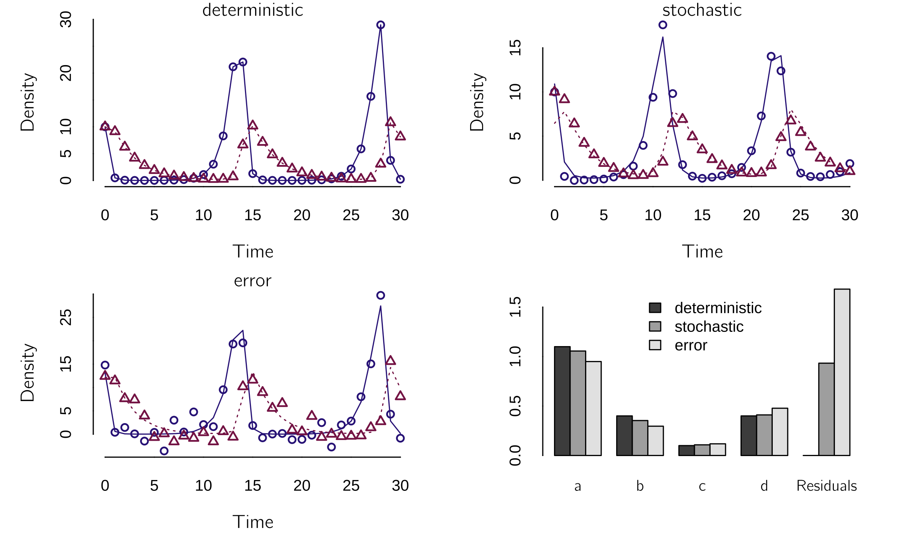
誤差のデータセットは、測定誤差のみを含む（\(X\) は真の得点 + 誤差）ので、決定論的なデータセットと非常に似て見えることに注意しよう。誤差はダイナミクス自体には影響しない。確率的な場合、誤差（ノイズ）は各時間ステップの後に状態に加えられ、これがダイナミクスに影響する。figure fig-ch4n-img1-old-49 で、波の位置が変化することが見て取れる。このうまく選ばれた場合には、当てはめは三つの場合すべてでかなり良く、パラメータ推定値はすべて真の値にかなり近い。残念ながら、これらの結果はかなり不安定である。自分でいくらか検証してみるとよい。
4.2.4 カスプに戻る
Grind が分岐解析を行うのにどう用いられるかを例示するために、カスプに戻る。カスプの微分方程式が次であったことを思い出そう。
\[ \frac{dX}{dt} = - V^{'}(X) = {a + bX - X}^{3}. \tag{4.4}\]
model <- function(t, state, parms){
with(as.list(c(state, parms)),{
dX <- a + b * X - X^3 # cusp
return(list(dX))
})
}
p <- c(a = 0, b = 1); s <- c(X = .1); run(ymin = -1)
s[1] <- -.1; run(add = TRUE)このコードは、\(a = 0\) と \(b = 1\) について双安定性を実証する二つの実行をシミュレートする。
時系列で双安定性を実証するより良い方法は、システムを確率的にすることである。これは第3章 sec-Cobbs-maximum-likelihood-approach で、確率微分方程式 \(dX = - V^{'}(X)dt + \sigma dW(t)\) を用いて行った。Grind にはこのための優れた技がある。関数呼び出しの「after」パラメータを用いて、システムに離散的なイベントを加えられる。「after」は、一定時間後または何らかの条件後にパラメータや状態の値を変えるのにも用いられる（マニュアルを参照）。ここではそれを用いて、平均 0、標準偏差 .4 の正規分布からサンプリングした乱数を \(X\) に加える。Grind でこれをシミュレートする最善の方法は、小さな時間ステップでオイラー法を用いることである。ノイズ項は、コードに示すように \(\sqrt{dt}\) で補正すべきである。確率微分方程式に関するウィキペディアのページが、その背後にある考えについてより詳しく教えてくれる。
figure fig-ch4n-img2-old-50 に見られるように、確率的な力がカスプの二つのモードの間の自発的なジャンプを引き起こす。ノイズすなわちランダムな揺らぎが、力学系の平衡状態のランドスケープ全体を観測可能にするとき、それはしばしば確率共鳴と呼ばれる。 これは、標準偏差 .1 以下で生成した図とこの図を比較することで見て取れる。
確率共鳴は、しばしば望ましくない、あるいは撹乱的とみなされるノイズが、実際にはある種のシステムにおいて建設的な役割を果たし、そうでなければ隠されたままであろうパターンや構造を明らかにするのを助けうる、という注目すべき例である。
layout(t(c(1,1,1,2)))
data <- run(table = TRUE, tmax = 1000, method = 'euler', tstep = .1,
after = "state <- state + rnorm(1,mean=0,sd=0.4) * sqrt(tstep)",
ymax = 2, ymin = -2, timeplot = FALSE)
plot(data, type = 'l', bty = 'n')
barplot(hist(data[,2], 30, plot = F)$counts, xlab = "X", hor = TRUE)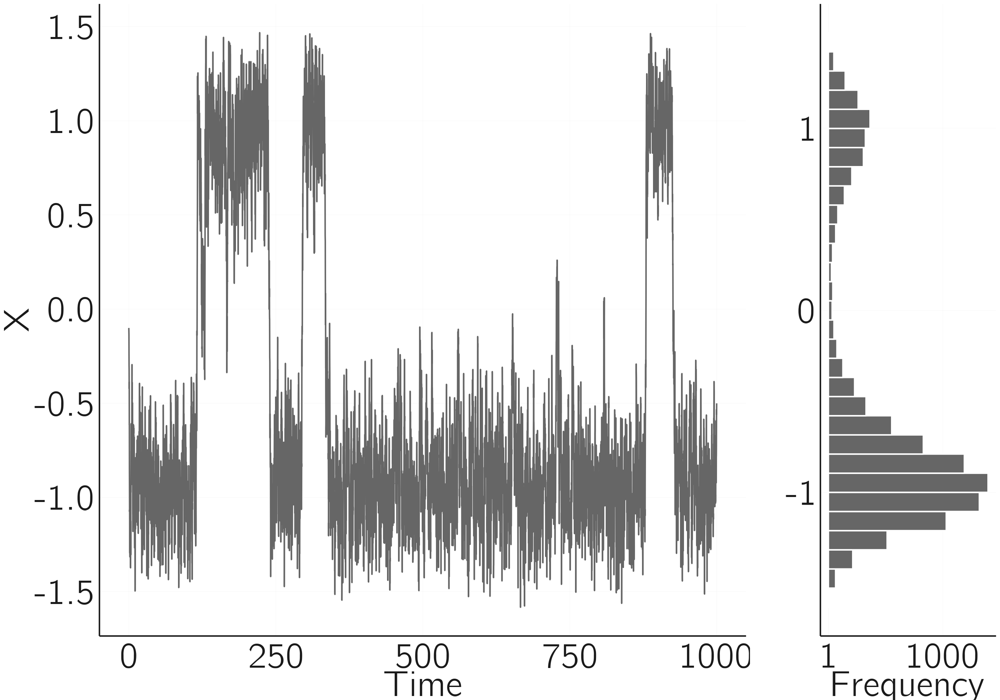
4.2.5 分岐解析
Grind の関数 newton() と continue() を組み合わせることで、分岐解析を行える。newton() 関数は安定な固定点と不安定な固定点を見つけ、continue() 関数は定常状態のパラメータ接続を実装し、分岐図を提供する。それは、パラメータを変えたときの平衡状態の変化を示す。これは、第2章でロジスティック写像について、\(r\) を変化させて平衡状態をプロットしたときに行ったことである（figure fig-ch2-img8 を参照）。
これら二つの関数の組み合わせを、異なる初期状態から始めて繰り返し実行することがしばしば必要である。figure fig-ch4n-img3-old-51 を作成するコードは次のとおりである。
p <- c(a = 0, b = 1)
low <- newton(s = c(X = -1)) # finds a minimum starting from X = -1
# Continue this steady state varying a
continue(low, x = "a", y = "X", xmin = -2, xmax = 2, ymax = 2)
high <- newton(s = c(X = 1)) # again starting from X = 1
continue(high, x = "a", y = "X", xmin = -2, xmax = 2, ymax = 2, add = TRUE)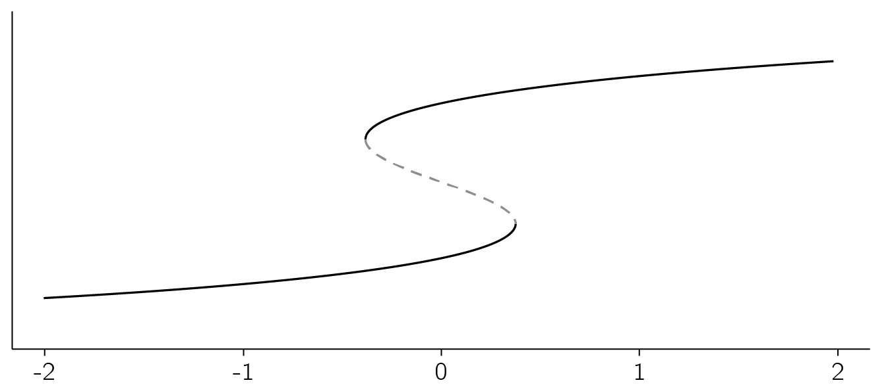
newton() と continue() で作成したヒステリシスのプロット。関数 newton() は平衡状態を見つけ、それが continue() で用いられて、分岐点が見つかるまで正規変数 a を変化させる。
R のもう一つの優れたツールは、de Roos による deBif パッケージである。4 これは、同じモデル指定を用い、よりインタラクティブな調査を可能にする R Shiny アプリケーションである。先のモデルと \(s\) と \(p\) の定義が与えられれば、次を実行できる。
install.packages("deBif")
library(deBif)
phaseplane(model, s, p)phaseplane() 関数は時間プロットと定常状態を返す。左側でパラメータと初期状態を変え、右上側でプロットパラメータを変えられる（二つの歯車をクリック）。Steady States のオプションは、安定な固定点と不安定な固定点を示すので非常に有用である。プロットの軸の最小値と最大値が正しく設定されていることを確認せよ。
次で、
bifurcation(model, s, p)一パラメータおよび二パラメータの分岐図を作成できる（LP 曲線のオプションを用いる、figure fig-ch4n-img4-old-52 を参照）。二パラメータの分岐図（左下）は Grind では作成できない。さらなる指示については deBif のヘルプページ（??deBif で）を参照せよ。
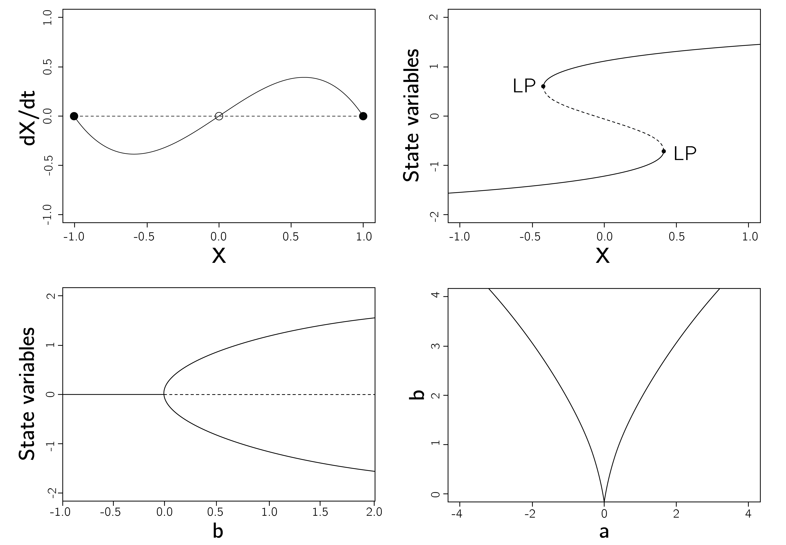
4.2.6 トウヒノシントメハマキ大発生モデル
第3章 sec-Mechanistic-models で、トウヒノシントメハマキ大発生モデルを紹介した。このモデルは後に嗜癖のモデルとして用いる。分岐図は次で作れる。
spruce <- function(t, state, parms) {
with(as.list(c(state, parms)), {
du = r * u * (1 - u/q) - u^2 / (1 + u^2)
return(list(c(du)))
})
}
state <- c(u = 0.5)
parms <- c(r = 0.4, q = 10)
bifurcation(spruce, state, parms)この捕食者–被食者モデルは一つの方程式しか含まないことに注意しよう。鳥のための別個の力学方程式はない。その理由は、これらのハマキの大発生が数週間で起こるからである。鳥はこの時間スケールでは繁殖しない。変数は再パラメータ化されている（sec-Mechanistic-models を参照）。捕食の項、元のパラメータ化では \(- BN^{2}/(A^{2} + N^{2})\) もまた、\(N = A\) で加速し始めて最大水準 \(B\) に至るロジスティックな形をもつ。緩やかな立ち上がり \(A\) が用いられるのは、鳥はこの個体群がある水準に達したときにのみ食性をハマキに切り替えるからである (Ludwig, Jones, and Holling 1978)。一定数の鳥は \(B\) 匹のハマキしか食べられない。この特定の捕食の項はホリングのタイプ III モデルと呼ばれる。すべてのホリングのタイプとその式は figure fig-ch4n-img5-old-53 に示されている。
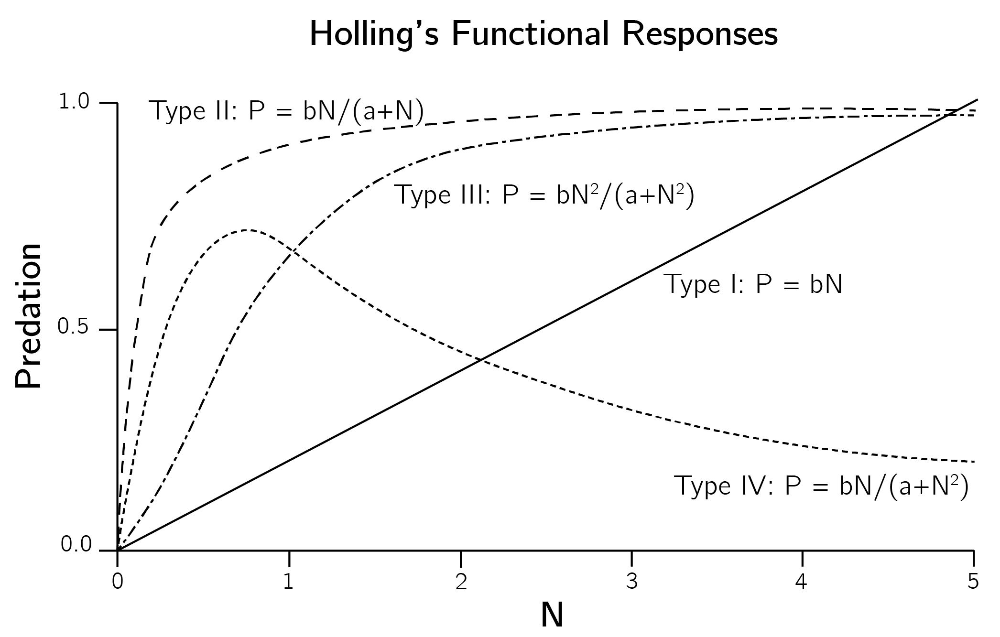
4.2.7 生態学的モデリングの評価
力学系理論の技術的な基本を理解することと、実際に有用な力学系モデルを構築することとは、まったく別のことである。モデルの各微分方程式のすべての項には、何らかの根拠づけが必要である。これらのモデルは、暗黙的にも明示的にも、多くの仮定を置く。たとえばロトカ–ヴォルテラモデルは、捕食者がいなければ被食者の個体群が指数関数的に成長すること、捕食者の個体群は被食者の個体群とともに死滅し他の被食者種に切り替えないこと、被食者の個体群の変化に対する捕食者の個体群の応答が直接的で遅延しないこと、モデルに空間的な成分がないこと、そして個体群の変化率がその大きさに比例すること——ほんの数例を挙げるだけでも——を仮定する。これらの仮定は生物学の文献で広く議論されており (Abrams et al. 2000)、これらの仮定を修正すると重大な帰結をもたらしうる。
ロトカ–ヴォルテラモデルの数百もの拡張と変種が提案され、研究されてきた。
たとえば、元のロトカ–ヴォルテラモデルには安定点がなく、リミットサイクルしかない。これらのサイクルは自然界で観察されてきたが、圧倒的に一般的というわけではない。見てきたように、被食者の成長を被食者の密度に依存させると、システムのダイナミクスは大きく変わる。このモデルはリミットサイクルの代わりに固定点の平衡状態をもつ。
空間的な成分を加えることも大きな違いを生みうる。これは sec-Biology におけるハイパーサイクルの例で示されるとおりである（簡単なレビューは Szostak, Wasik, and Blazewicz (2016) を参照）。より多くの被食者種と捕食者種を加えることも違いを生む (Johnson, Mumma, and St-Laurent 2019)。被食者方程式の捕食の項には多くの興味深い選択肢がある。Tyutyunov and Titova (2020) は、ホリングの機能的応答の代替物である 12 の栄養関数を比較している。選択肢は圧倒的である。ここで生物学者は、第1章 sec-The-art-of-simplification で論じた問題に直面する。モデルは容易に複雑になりすぎる。交通シミュレーションモデルは極めて単純でありながら、鍵となる現象を説明するのに十分であったことを思い出そう。
さらなる問題は、これらすべての異なるモデルを経験的に検証することが難しい、ということである。生物学的データの質はしばしば心理学的データのそれより優れているが、生物学者もまた自分たちのモデルの質的な予測に頼らなければならない。化学、とりわけ物理学のモデルは、しばしば量的に検証できる。転移は制御変数の予測された値でちょうど生じる。生態学的モデルは、心理学のモデルとよく似て、この水準の予測を許さない。これは問題である。というのも、モデルを質的にしか検証できないなら（リミットサイクルはあるか。どのタイプの転移が検出できるか。ヒステリシスはあるか）、多くのモデルの選択は特に関係しなくなるからである。
生命科学と心理学における複雑系研究の最も重要な課題の一つは、これらのデータに関わる問題に効果的に対処する力学系モデルを構築することである。
これがそれほど問題にならない場合は、第1章で紹介した交通の例である。オンラインのシミュレーションで遊んでみるよう頼んだ。私たちは今や、このモデルをよりよく理解する基本を知っている。このモデル（Intelligent Driver Model）に関するウィキペディアのページは方程式を提示しており、それらもまた結合常微分方程式である。最も単純な場合の Grind での実装は次のようになる。
model <- function(t, state, parms){
with(as.list(c(state, parms)),{
x <- state[1:n]
v <- state[(n+1):(2*n)]
dx <- v # change in distance = speed
delta_v <- v - m %*% v # difference in speed to next car
s_alpha <- m %*% x - x - l # distance to next car
s_alpha[n] <- 100 # front car has no car in front
s_star <- s0 + v * T + v * delta_v / (2 * sqrt(a * b))
dv <- a * (1 - (v/v0)^delta - (s_star/s_alpha)^2) # change in speed
return(list(c(dx, dv)))
})
}
n <- 50
p <- c(l = 5, v0 = 30, T = 1.5, a = .73, b= 1.67 , delta = 4, s0 = 2)
x_init <- (0:(n-1)) * (p['s0'] + p['l'])
v_init <- rep(0, n)
s <- c(x_init, v_init)
m <- diag(1, n, n); m <- rbind(m[-1,], 0) # order cars
# simulation with front car suddenly breaking at t = 150:
data <- run(tmax = 300, timeplot = FALSE, table = TRUE,
after = 'if (t==150) state[2*n] = 0')
matplot(data[,2:(n + 1)], type = 'l', bty = 'n', xlab = 'time', ylab = 'x')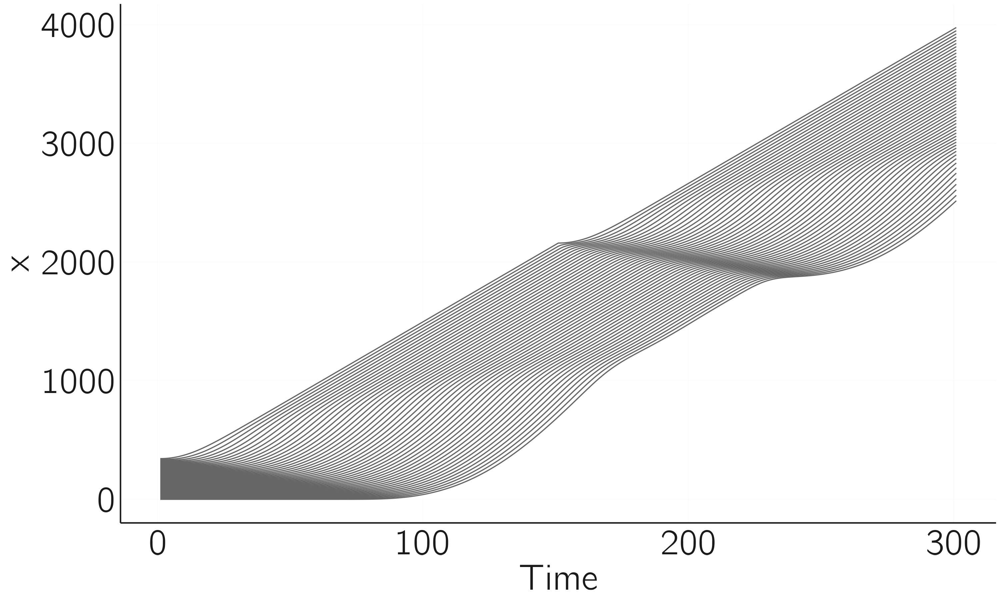
このシミュレーションの結果は figure fig-ch4n-img6-old-54 に示されている。微分方程式の背後にある推論を理解することはそれほど容易ではないが、私はもう一つの点を指摘したい。ウィキペディアのページは、単位（s、m/s、m/s2）をもつパラメータ値を与えている。無次元のパラメータ（加速の指数）をもつこともできる。 この次元解析は物理学のモデリングにおいて決定的な段階だが、生物学的、とりわけ心理学的な応用における弱点である。これがモデルの量的な検証を妨げる。
次元解析は、諸量の次元を分析して関係やスケーリング則を導き、方程式が整合していることを保証することを含む。
4.3 心理学的モデル
本節では、主に微分方程式の系の形で、心理学における力学系モデルの概観を提示する。リストは広範だが、網羅的ではない。自分自身のモデリングの取り組みに乗り出す前に、さまざまなモデルと応用を探求することが重要である。
4.3.1 反応時間モデル
速度を競う意思決定の研究において、多くの動的モデルが提案されてきた (Bogacz et al. 2006)。最もよく研究された場合は二肢強制選択課題であり、そこでは刺激が提示され、二つの選択肢の間でできるだけ速く選択をしなければならない。刺激は左または右を指す矢印でありうる。最も人気があるのは蓄積モデルである（figure fig-ch4n-img7-old-55）。
蓄積モデルは、決定境界に達して運動反応が開始されるまで、ノイズを含む情報が時間にわたって蓄積される、と仮定する。
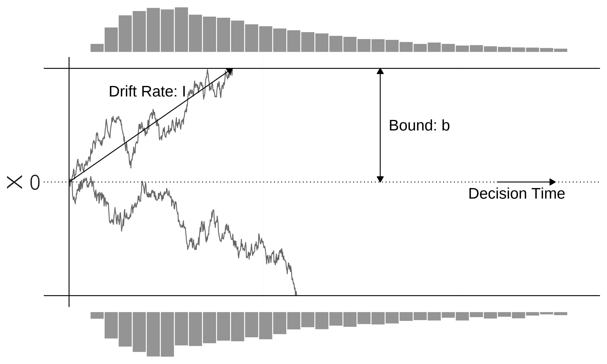
この過程をモデル化する一つの方法は、\(I\) を刺激駆動の入力とする、ドリフト拡散モデル（DDM）と呼ばれる単一の確率的線形微分方程式を用いることである。
\[ dX = Idt + \sigma dW. \tag{4.5}\]
以前と同様、\(dt\) は方程式の左辺に移される。\(dW\) はホワイトノイズであり、平均 0、標準偏差 \(\sigma\)（既定では .1）で正規分布する。選択肢の一方へのバイアスがないと仮定し、0 から始める、\(X_{t = 0} = 0\)。
Grind でのモデルの実装は非常に単純である。技は再び run 文にあり、それが各ステップの後にホワイトノイズを加える。5 負または正の境界のいずれかに達したとき実行を止める。
model <- function(t, state, parms) {
with(as.list(c(state, parms)), {
dX = I
return(list(c(dX)))
})
}
p <- c(I = .01); s <- c(X = 0)
bound <- 1
run(table = TRUE, method = 'euler', tstep = .1,
tmax = 500, after = "state<-state+rnorm(1,mean=0,sd=0.1)*sqrt(tstep);
if(abs(state)>bound) break", # stop at bound
ymin = -bound, ymax = bound)このモデルは、観察される反応時間と正確性を、基礎となる過程のパラメータ、ドリフト率、そして確信境界の観点で説明する。モデルをデータに当てはめることで、遅い反応が低いドリフト率（低い技能または難しい課題）のためなのか、それとも保守的に選ばれた境界のためなのかを判定できる。
ドリフト拡散モデルのような蓄積モデルは速度・正確性トレードオフを説明する。確信境界をより高く設定すれば、より遅いがより正確になる。
ドリフト拡散モデルのよく知られた拡張はオルンシュタイン–ウーレンベックモデルである。
\[ dX = (\lambda x + I)dt + \sigma dW. \tag{4.6}\]
\(\lambda < 0\) については、この過程は \(I/\lambda\) に収束する（\(\sigma = 0\) と仮定して）が、\(\lambda > 0\) については発散する。心理学的な解釈については Bogacz et al. (2006) を参照されたい。最も単純な二次元モデルは競争（レース）モデルである。
\[ \begin{gathered} dX_{1} = I_{1}dt + \sigma W_{1}, \\ dX_{2} = I_{2}dt + \sigma W_{2}. \end{gathered} \tag{4.7}\]
今や二つの独立した過程が一つの正の境界へと走る（競争する）。最初に到達したものが勝つ。より生物学的に着想を得たモデルは抑制を含む。相互抑制モデルの方程式は次のとおりである。
\[ \begin{gathered} dX_{1} = (-k_{1}X_{1} - w_{1}X_{2} + I_{1})dt + \sigma W_{1}, \\ dX_{2} = (-k_{2}X_{2} - w_{2}X_{1} + I_{2})dt + \sigma W_{2}. \end{gathered} \tag{4.8}\]
これらはすべて、複雑な振る舞いを示さない線形力学系であることに注意しよう。非線形の代替物の例は Roxin and Ledberg (2008) と Verdonck and Tuerlinckx (2014) で提示され、Ratcliff et al. (2016) で論じられている。
異なる蓄積モデル間の関係は figure fig-ch4n-img8-old-56 に要約されている。それは、ドリフト拡散モデルのような便利なモデルが、プール抑制モデルや相互抑制モデルのような、より生物学的に現実的なモデルからパラメータへの制約によって導けることを示している。
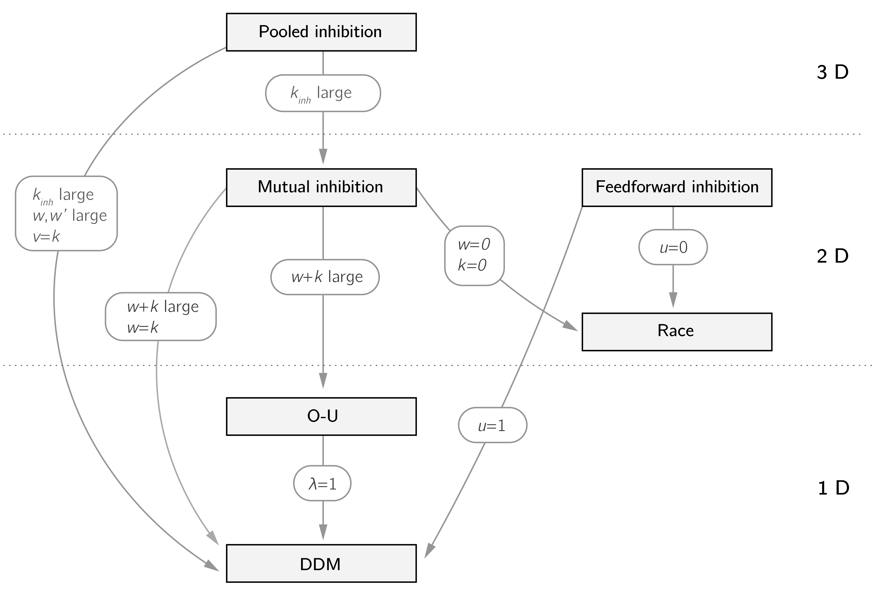
4.3.2 二者関係モデル
二者相互作用の研究は動的モデリングに適している。二者相互作用は、養育者–子ども相互作用の分野で広範に研究されてきた (Ainsworth et al. 2015)。ここでは、恋愛関係における二者相互作用に焦点を当てる。
4.3.2.1 ロミオとジュリエット
一種のモデルは、Rapoport (1960) と Strogatz (1988) の出版物にさかのぼる。私は Sprott (2004) が記述した設定に従う。それは動的モデリングを実演するためのおもちゃのモデルとして意図されたものだったことに注意しよう。
このモデルはロミオとジュリエットの間の相互作用についてのものであり、\(R\) と \(J\) はロミオとジュリエットの感情を表す。感情の変化は、両者の感情の関数であると想定される。
\[\begin{gathered} \frac{dR}{dt} = aR + bJ, \\ \frac{dJ}{dt} = cR + dJ. \end{gathered} \tag{4.9}\]
まず、\(b = c = 0\) の場合は、解 \(R = {R_{0}e}^{at}\) と \(J = {J_{0}e}^{dt}\) をもつ指数関数モデルに似ており、\(a\) と \(d\) が負か正かに応じて（0 に）収束するか（無限大に）発散することに注意しよう。 次のモデルでより理にかなった設定を見ていく。とはいえ、この結合線形微分方程式の系は、振る舞いにおいて驚くほど豊かである。パラメータの符号によって、私たちは非常に異なる恋愛のスタイルを定義する。Strogatz (1988) は以下を区別している。
このモデルにおける発散、すなわち正の感情の際限のない指数関数的成長は、魅力的な概念だが、残念ながら非現実的である。
熱心なビーバー（Eager beaver）：\(a\ > \ 0,\ b\ > \ 0\)、ロミオは自分自身の感情にもジュリエットの感情にも励まされる。
自己愛的な変わり者（Narcissistic nerd）：\(a\ > \ 0,\ b\ < \ 0,\) ロミオは自分の感じるものをもっと欲するが、ジュリエットの感情からは退く。
慎重な（安定した）恋人（Cautious (secure) lover）：\(a\ < \ 0,\ b\ > \ 0\)、ロミオは自分自身の感情からは退くが、ジュリエットの感情に励まされる。
隠者（Hermit）：\(a\ < \ 0,\ b\ < \ 0,\) ロミオは自分自身の感情からもジュリエットの感情からも退く。
ジュリエットも自分自身のスタイルをもつかもしれず、それが込み入った相互作用をもたらす。Sprott (2004) や他の資料は、このモデルの拡張された解析的取り扱いを与えている。 力学系についてより多くを学びたいなら、行列代数とその線形力学系への応用を学ぶべきである。私はそれを本書から除くことにした。というのも、ほとんどの心理学的力学系モデルは非線形だからである。ここでは Grind を用いていくつかの場合を検証するにとどめる。私は三つの異なるパラメータ値の組をもつ三つの例を挙げる。第一の場合、初期の相互の関心は薄れる。第二の場合、関係はいくらかの浮き沈みの後に立ち消えになる。そして第三の場合、二人は憎しみと愛のサイクルに行き着く。
線形微分方程式の系は解析的に解けて、平衡状態の振る舞いは固有値によって特徴づけられる。これを理解するにはある程度の行列代数の知識が必要である。
model <- function(t, state, parms) {
with(as.list(c(state, parms)), {
dR <- a * R + b * J
dJ <- c * R + d * J
return(list(c(dR, dJ)))
})
}
layout(matrix(1:6, 3, 2, byrow = TRUE))
p <- c(a = -1, b = 1, c = .5, d = -1) # parameters
s <- c(R = 0.1, J = .1)
run()
plane(portrait = TRUE, ymin = -1, xmin = -1, grid = 3,
vector = TRUE, legend = FALSE)
p <- c(a = -.2, b = -1, c = 1, d = 0) # parameters
run(ymin = -.2, legend = FALSE)
plane(portrait = TRUE, ymin = -1, xmin = -1, grid = 2,
tstep = .001, legend = FALSE)
p <- c(a = -.1, b = -1, c = 1, d = 0.1) # parameters
run(ymin = -.2, legend = FALSE)
plane(portrait = TRUE, ymin = -1, xmin = -1, grid = 3,
tstep = .001, legend = FALSE)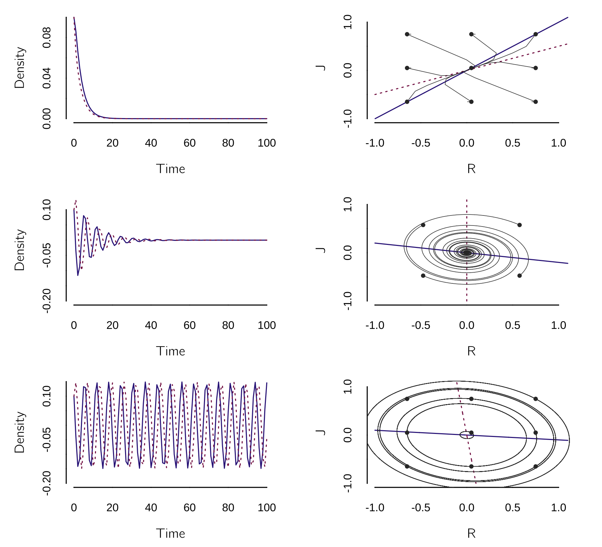
figure fig-ch4n-img9-old-57 の位相プロットの線はナルクライン（等傾線）である。 線形力学系では、ナルクラインは直線である。それらが交わるところで、安定または不安定な固定点が生じうる。ナルクラインの間の角度に応じて、固定点（最初の二つの場合）、リミットサイクル（最後の場合）、または発散（図示せず）が得られる。
ナルクラインとは、振る舞い変数 \(R\) と \(J\) の時間導関数が 0 になる曲線である。
Rinaldi (1998) は、このモデルをもう少し現実的で研究しやすくする拡張と制約を提案した。基本方程式は今や \(dR/dt = - aR + bJ + A_{J}\) であり、ここで \(a\) は忘却パラメータ（正であるよう制約される）と解釈され、\(A_{J}\) はジュリエットの魅力度である。この場合、漸近安定性（すなわち固定点をもつこと）の必要十分条件は \(ad > bc\) である。
リナルディはまた、異なる水準の魅力度をもつ異性愛の男女の集団の場合も考えている。その考えは、男性と女性は、両者がより最適な愛の水準に達したときに、現在のパートナーを離れて結び付く、というものである。リナルディは、集団が安定状態に達する条件を分析している。この結婚割り当て問題と呼ばれるものは、割り当て問題として知られる最適化理論の有名な問題の一例である。目標は、どの男性も女性も現在のパートナーよりも互いを好まないような、男性から女性への安定した割り当てを見つけることである (Gale and Shapley 1962)。私たちは私たちの教育プログラムで、学生を修士課程のトラックに割り当てるためにそのようなアルゴリズムを用いている。
このモデルの他のいくつかの高度な変種が提案されてきた。これらの論文では、モデルの数学的性質の分析が、心理学的理論よりもはるかに多くの注目を集めている。変数が正確には何であるのか、そしてある種のモデルの仮定の背後にある推論が何なのかが、しばしば不明である。次節で論じるマレーとゴットマンの仕事は、この点でより興味深い。
4.3.2.2 結婚の数学
心理学者ジョン・ゴットマンと数理生物学者ジェームズ・マレー (2002) によって開発された結婚のモデルは、心理学的理論とデータにしっかりと根ざしている。このモデリングの仕事に着想を与えた主たる現象は、夫婦がその結婚における継続中の意見の相違の主要な領域について議論するとき、夫婦間の相互作用のパターンが離婚を予測する、というゴットマンとレヴェンソンの (1992) 発見である。
このモデルは二つの結合差分方程式から成るが、私はそれを微分方程式の形で提示する。6
\[ \begin{gathered} \frac{dW}{dt} = I_{w}(H,a,b) - r_{w}W + W_{e}, \\ \frac{dH}{dt} = I_{h}(W,a,b) - r_{h}H + H_{e}, \end{gathered} \tag{4.10}\]
ここで影響関数 \(I_{w}\) と \(I_{h}\) は次のように定義される。
\[ I(x,a,b) = \frac{sgn(x)}{1 + e^{a\left( |x| - b \right)}}. \tag{4.11}\]
私は、非常に異なる形の影響を許容するために、この柔軟な関数を考案した（以下で見るとおり）。両方の影響が 0 のとき（\(a = - 8,b = - \infty\)）、妻（\(W\)）と夫（\(H\)）の状態すなわち気分は、それぞれ速度 \(r_{w}\) と \(r_{h}\) で \(W_{e}\) と \(H_{e}\) に収束する。\(W_{e}\) と \(H_{e}\) は、配偶者が相互作用しないときの、影響を受けない気分の定常状態である。7
しかし、影響関数（\(a = - 8, b = 0\)）が、一方の配偶者の正の気分が他方の正の気分を引き起こし、負の気分が負の気分を引き起こすようなものであれば、初期状態と影響を受けない定常状態の値に応じて、負の平衡状態と正の平衡状態が期待される。
もう一つのより複雑な影響関数（\(a = - 8, b = 1\)）は、極端な気分状態のみが他方の配偶者に影響する、と仮定する。
これは次で実装される。
model <- function(t, state, parms) {
with(as.list(c(state, parms)), {
dW <- influence(H,a,b) - rw * W + We
dH <- influence(W,a,b) - rh * H + He
return(list(c(dW, dH)))
})
}
layout(matrix(1:9, 3, 3, byrow = TRUE))
par(mar=c(4,4,1,2))
influence <- function(x, a = -8, b = 1)
sign(x) / (1 + exp(a * (abs(x) - b)))
p <- c(rw = .6, rh = .6, We = .18, He = -.18, a = -8, b = Inf)
s <- c(W = 0, H = 0)
for(b in c(Inf, 0, 1)){
p['b'] <- b
curve(influence(x, -8, b), -3, 3, xlab = 'W', ylab = 'H', lwd = 2)
plane(xmin = -2.5, xmax = 2.5, ymin = -2, ymax = 2, legend = FALSE)
for(i in seq(-2, 2, by = .25)) newton(s = c(W = i, H = i), plot = TRUE)
for (i in 1:100)
run(state = c(W = rnorm(1,0,.5), H = rnorm(1,0,1)), tmax = 50, ymin = -2,
ymax = 2, add = (i>1), legend = FALSE)
}これは figure fig-ch4n-img10-old-58 をもたらす。
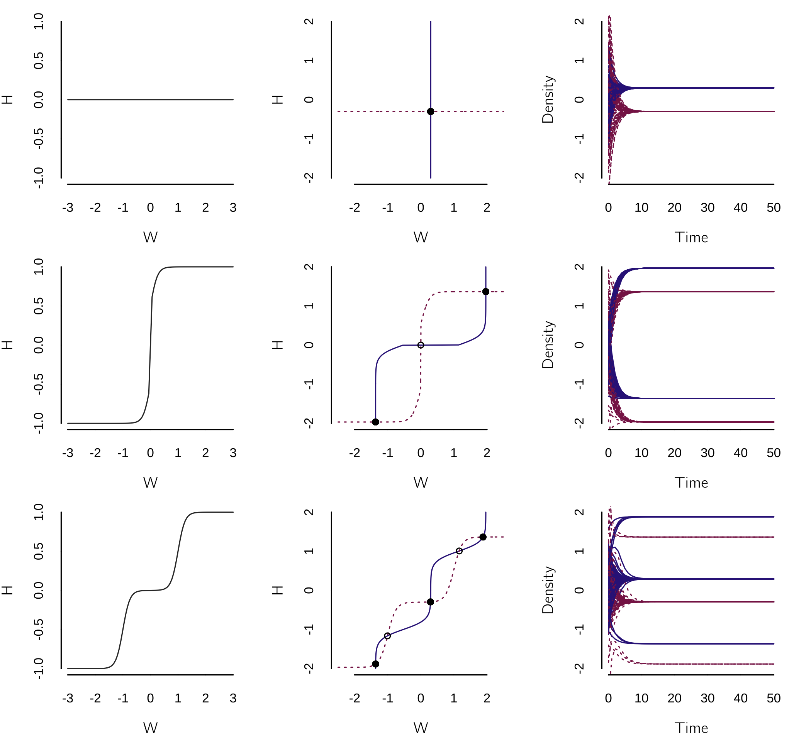
三つの影響関数が第一列に、ナルクラインが第二列に、そしてランダムな初期状態からの一連の実行が第三列に示されている。第一の場合は、相互の影響がないとき、気分が \(W_{e}\) と \(H_{e}\) に収束することを示す。第二は二つの平衡状態をもち、中央に不安定な固定点がある。一方、最後の場合は五つの固定点をもち、そのうち三つが安定である。
私は影響関数とほとんどのパラメータを両配偶者について同じに保ったが、必ずしもこうである必要はない。平衡状態を解析的に導き、これらの平衡状態の安定性を判定することが可能である (Gottman et al. 2002)。彼らはまた、双線形の影響関数を用いて、正と負の話者相互作用から成るデータにモデルを当てはめる二段階の手続きを提案している。より高度な統計的アプローチが Hamaker, Zhang, and van der Maas (2009) で提案されている。治療者とクライエントの間の相互作用についての関連するモデルは Tschacher and Haken (2019) を参照。
4.3.3 ファン・ヘールトのモデル
一連の論文において、ポール・ファン・ヘールトは発達過程についての力学系モデルを提案した (Den Hartigh et al. 2016; van Geert 1998, 1991)。
認知能力や言語能力は、個体群のロジスティック成長と同様に、限られた容量によって制約される自己触媒的な過程で時間とともに成長する、と考えられている。
ファン・ヘールトは多くの異なるモデルを提案したが、私は一つの例だけを挙げる。ファン・ヘールト (1991) は、ある認知能力の成長率が別の認知能力の水準に依存する場合をモデル化するために、二つの結合差分方程式の系を導入した。
\[ \begin{gathered} X_{t + 1} = (a - bY_{t})X_{t} - \frac{aX_{t}^{2}}{K}, \\ Y_{t + 1} = (c - dX_{t})Y_{t} - \frac{cY_{t}^{2}}{K}. \end{gathered} \tag{4.12}\]
これは次のように実装できる。
model <- function(t, state, parms) {
with(as.list(c(state, parms)), {
dX <- (a + b * Y) * X - a * X^2 / K
dY <- (c + d * X) * Y - c * Y^2 / K
return(list(c(dX, dY)))
}) }
layout(matrix(1:4,2,2))
# Set parameter values and run the model:
p <- c(K = 1, a = 0.4, b = -0.05, c = .4, d = -0.15)
s <- c(X = 0.01, Y = 0.01)
run(method = "euler", tstep = 1)
plane(portrait = TRUE, grid=4)
p <- c(K = 1, a = 0.05, b = -0.1, c = 0.05, d = -0.09)
s <- c(X = 0.0126, Y = 0.01)
run(tmax = 1500, method = "euler", tstep = 1)
plane(portrait = TRUE, grid = 4)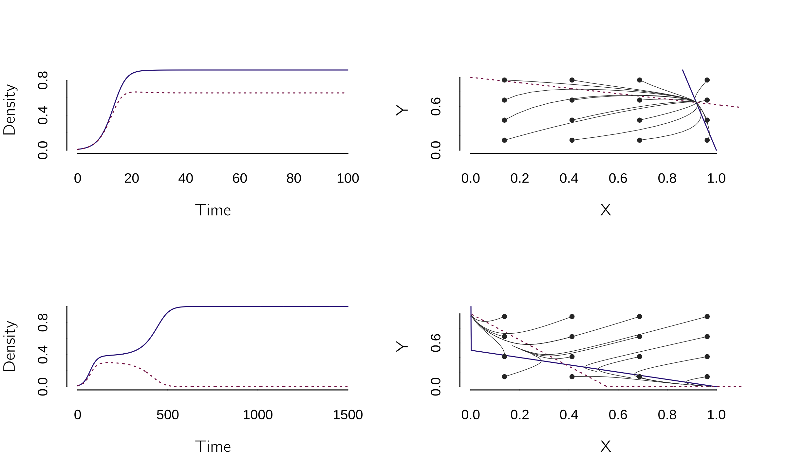
したがって、基本的に二つの結果がある。すなわち、両方が成長するか、一方が成長して他方を抑制するかである（figure fig-ch4n-img11-old-59 を参照）。差分方程式をシミュレートするために method が “Euler” に設定されていることに注意しよう。
4.3.4 第三の源のポリアの壺モデル
もう一つの種類の離散力学系モデルはポリアの壺モデルであり、これは心理学における非線形の発達過程を理解するのに関係する。Molenaar, Boomsma, and Dolan (1993) は第三の源仮説を提案している。 一連の研究に基づき、Gärtner (1990) は、近交系マウスの体重の変異の70〜80%が、遺伝的および環境的影響に加えて生物学的変動性を生み出す第三の成分によるものと思われる、と結論した。
第三の源仮説は、複雑な生きたシステムの発達が三つの変異の源、すなわち遺伝的変異、環境的変異、そして自己組織化する過程によって影響される、と提案する。
この効果についての単純で、私見では洞察に富む力学モデルは、ポリアの壺モデルである (Mahmoud 2008)。この離散力学モデルでは、いくつかの赤と青のビー玉を含む壺にビー玉を加える。二つの青と一つの赤のビー玉から始めるとしよう。ランダムにビー玉を一つ取り出す。それが青なら、別の青のビー玉とともに戻す。それが赤なら、それを戻して赤のビー玉を一つ加える。初めは \(p(青) = 2/3\) だが、ビー玉がますます増えていくとき、その確率は時間とともにどうなるだろうか。少し考えてみよ。
私の直観は単に誤っており、私の経験では、これは圧倒的大多数の人々に当てはまる。何が起こるかは figure fig-ch4n-img12-old-60 に示されている。過程を実行するたびに、\(p(青)\) は安定状態に達するが、その状態の値はランダムである。何が起こるかというと、初期の（ランダムな）サンプルが長期のダイナミクスに莫大な影響を与えるのである。これがマタイ効果を生み出す。
マタイ効果は、富める者はますます富み、貧しき者はますます貧しくなる、と述べる。
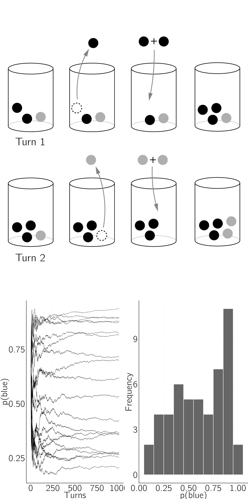
Savi et al. (2019) は発達的な解釈を提供している。ある子どもが誕生日にテニスラケットをもらうと想像しよう。まず、彼女は家でバックハンドを二度練習するが、誤ったやり方である。それから、初めてのテニスレッスンで、コーチが正しいバックハンドを実演する。彼女は今や三つの経験、すなわち二つの誤ったものと一つの正しいものをもつ。さて、彼女のバックハンドの発達が非常に単純な学習スキーマに基づくとしよう。バックハンドのリターンが必要になるたびに、彼女は以前の経験からサンプリングし、サンプリングされたバックハンドがそれから以前の経験の集合に加えられる。したがって、経験の累積はポリアの壺のスキームに従う。彼女はテニスの名人になる潜在能力をもつが、あまり幸運でない初期経験をもった双子の姉妹は、最初の一年でテニスレッスンをやめることに決める。このモデルは多くの発達理論（たとえば臨界期仮説）と整合するが、これらの理論は形式的なアプローチを欠いている。
4.3.5 パニックモデル
近年、私たちはパニック障害のモデルに取り組んできた (Robinaugh et al. 2019)。パニック障害の理論には、覚醒と知覚された脅威の間の強化的なフィードバックループがある。覚醒の増加が脅威（たとえば心臓発作）として知覚されると、覚醒はさらに増加する。この「悪循環」がパニック発作をもたらす (Clark 1986)。したがって、これらの理論は二つの因果効果、すなわち知覚された脅威の覚醒への効果と、覚醒の知覚された脅威への効果を措定する。
さらに、覚醒の変化に対する知覚された脅威の効果は本質的に線形であり、一方、知覚された脅威に対する覚醒の因果効果は非線形（S 字型）であると仮定する。その論拠については Robinaugh et al. (2019) を参照されたい。両方とも非線形であると論じることもできるが、これはモデルの質的な振る舞いを根本的には変えない。モデルの中心的な部分は二つの結合微分方程式から成る。
\[ \begin{gathered} \frac{dA}{dt} = - A + bT, \\ \frac{dT}{dt} = \frac{1}{1 + e^{- \alpha(A + \beta)}} - T. \end{gathered} \tag{4.13}\]
これはロミオとジュリエットのモデルに少し似ているが、今や覚醒 \(A\) の知覚された脅威 \(T\) の変化に対する効果は、0 から始まって 1 まで成長するロジスティック関数である。位置は \(\beta\) によって決まり、加速すなわち急峻さは \(\alpha\) によって決まる。
実装と簡単な例示は次のとおりである。
model <- function(t, state, parms) {
with(as.list(c(state, parms)), {
dA <- -A + b * T
dT <- -T + 1/(1 + exp(-alpha * (A + beta)))
return(list(c(dA, dT)))
})
}
p <- c(b = 1, alpha = 12, beta = -.7)
s <- c(A = 0, T = 0)
# arousal increase for time t in 20:30, leads to panic,
# which after some time ('30 min') disappears
layout(1:2)
plane(vector = TRUE, xmin = 0, ymin = 0, xmax = 1,
ymax = 1.1, legend = FALSE)
newton(s = c(A = 0, T = 0), plot = TRUE)
newton(s = c(A = 0.8, T = .8), plot = TRUE)
newton(s = c(A = 1, T = 1), plot = TRUE);
run(after="if(t>20&t<30)state[1]<-1;state<-state+rnorm(2,mean=0,sd=0.1)")\(\beta\) パラメータは、非パニックモードが支配的だがパニックモードが存在する（準安定状態）ように設定されている。この状態は容易に撹乱されうる（plane を参照）。\(20 < t < 30\) について、覚醒が高い値に設定され、その結果、知覚された脅威が高くなる。しかし、両方の過程にいくらかのノイズも加えたので、しばらくすると覚醒も知覚された脅威も低い値に飛び戻る。
このモデルのこのダイナミクスはカスプであり、次で確認できる（figure fig-ch4n-img15-old-63 を参照）。
p <- c(b = 1, alpha = 12, beta = -.5)
start <- newton(s = c(A = .1, T= .1))
continue(start, x = "beta", y = "T", xmin = -1, xmax = 1, ymax = 1)
continue(start, x = "alpha", y = "T", xmin = -1, xmax = 20, ymax = 1)
start <- newton(s = c(A = 1, T = 1)) # finds a minimum starting from X = -1
continue(start, x = "alpha", y = "T", xmin = -1, xmax = 20,
ymax = 1, add = TRUE)Robinaugh et al. (2019) では、このモデルは、基本モデルのパラメータに作用する覚醒や逃避スキームといった他の過程で拡張されている。これらは、異なる時間スケールでモデル化される、より遅い過程である。
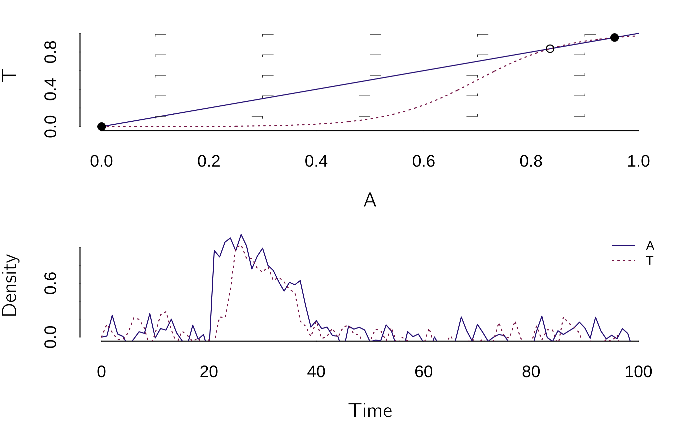
4.3.6 神経モデル——ファン・デル・ポルと異なる時間スケール
パニックモデルで、私たちは時間スケールの違いに触れた。 時間スケールは、速いダイナミクスを遅いダイナミクスから分離することを可能にし、それによって分析とモデリングを単純化するので、複雑系を理解し管理するのに決定的に重要である。これについては、多くの興味深い応用をもつファン・デル・ポル振動子の文脈でさらに説明する。
時間スケールの違いとは、システムの構成要素や過程が展開する異なる速度を指し、システム全体の振る舞いに影響する。
カスプ方程式 \(dX/dt = {a + bX - X}^{3}\) を、\(b=1\) としてヒステリシスをもつようにすることを想像しよう。しかし今や \(a\)、実際には \(da/dt\) を \(X\) の関数にする。\(da/dt = - \varepsilon X\)、ここで \(\varepsilon\) は小さな定数である。\(\varepsilon\) を .05 に設定すると、\(a\) は \(X\) より 20 倍遅く変化する。今や何が起こるかというと、\(X = 1\)、\(a = 0\) で、\(a\) は \(X\) が負の値に飛ぶ点まで減少する。今や \(a\) は増加し、その結果、\(X\) の正の値への新たなジャンプが生じる。そしてこのループは際限なく続く。
model <- function(t, state, parms){
with(as.list(c(state, parms)),{
dX <- a + b * X - X^3 # cusp
da <- -e * X
return(list(c(dX, da)))
})
}
s <- c(X = .1, a = 0) # initial state and parameter values
layout(matrix(1:4, 2, 2, byrow = TRUE))
p <- c(e = .05, b = -.5)
run(ymin = -.1, main = 'b = -.5', legend = FALSE)
plane(xmax = 2, ymin = -1, ymax = 2, xmin = -2,
portrait = TRUE, grid = 2, main= 'b = -.5')
p <- c(e = .05, b = 1)
run(ymin = -1.5, main = 'b = 1', legend = FALSE)
plane(xmax = 2, ymin = -1, ymax = 2, xmin = -2,
portrait = TRUE, grid = 2, main= 'b = 1')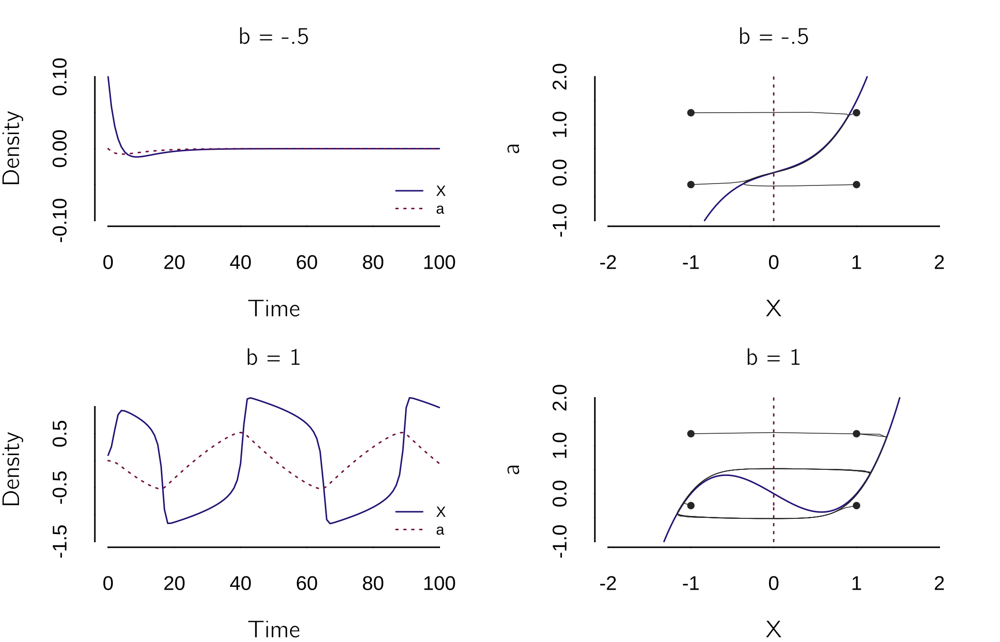
プロット（figure fig-ch4n-img15-old-63）はこの振る舞いを例示している。\(b < 0\) については、\(X\) は固定点に収束する。\(b > 0\) については、上下への周期的なジャンプが見られる。この振動子は基本的に有名なファン・デル・ポル振動子であり、元々は次の形で書かれた。
\[ \frac{d^{2}X}{dt^{2}} = \mu\left( 1 - X^{2} \right)\frac{dX}{dt} + x. \tag{4.14}\]
そのような二階微分方程式は、複数の方程式の一階の系の形に書き換えることができ、これが Grind に必要な形である。8 このモデルの形は、ニューロンの興奮性についてのフィッツフュー–南雲モデルに関係するので、（神経）心理学的な関心の対象である (Izhikevich and FitzHugh 2006)9。
\[ \begin{gathered} \frac{dV}{dt} = V - \frac{V^{3}}{3} - W + I, \\ \frac{dW}{dt} = .08(V + .7 - .8W). \end{gathered} \tag{4.15}\]
膜電位 \(V\) の方程式は、正のフィードバックを介した再生的な自己興奮を可能にする三次の非線形性をもつ。回復変数 \(W\) は線形の負のフィードバックを提供する。\(I\) は入力を表す。このモデルの主な現象は figure fig-ch4n-img15-old-63 に示されている。
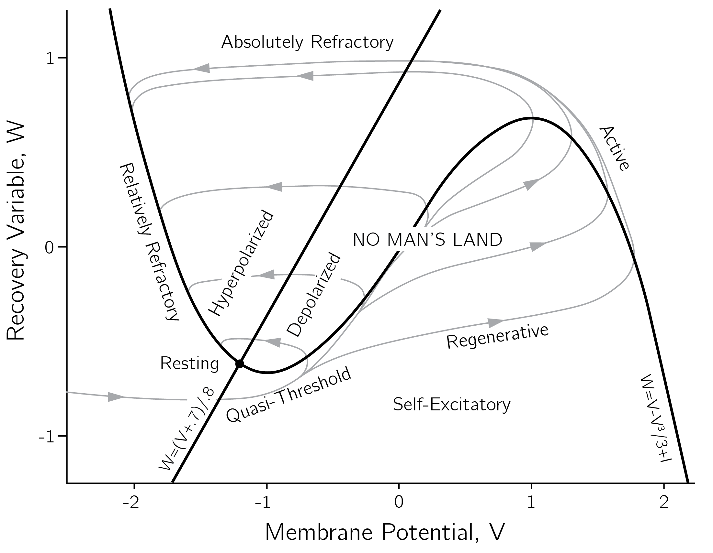
このモデルは単一のニューロンについてのものである。決定的に重要なのは、第二の方程式が遅い過程であることである。時間スケールの効果はニューラルネットワークにおける学習でも重要な役割を果たす。ほとんどのニューラルネットワークには、ニューロンの活動を更新する速い方程式と、結合強度を更新するはるかに遅い方程式がある。
ファン・デル・ポルモデルの他の応用は、ハーケン–ケルソ–ブンツ（HKB）モデルの拡張（sec-Motor-action を参照）、多安定知覚 (Fürstenau 2014)、発達過程 (Molenaar and Oppenheimer 1985)、そして双極性障害 (Daugherty et al. 2009) に関わる。特に有用と思われる一つの場合は、覚醒–睡眠サイクルのモデリングである (Forger, Jewett, and Kronauer 1999)。
4.3.7 類推によるモデリング——ハマキとビール
動的モデルをゼロから作ると、その複雑さを完全には把握できないかなりの可能性がある。いくつかの非常に単純なモデルがすでに驚くほど複雑な振る舞いを示すことを見てきた。
これらの問題に対処する一つのアプローチは、類推によるモデリング、すなわち基本的にはモデルを模倣することである。たとえば、私たちは態度をモデル化するのにイジングモデルを、知能をモデル化するのに相利共生的なロトカ–ヴォルテラモデルを用いた。両方とも sec-ch6 で説明する。ここでは、鍵となる現象の一部の選択に焦点を当て（そして今のところ他の多くを無視して）、嗜癖を例として用いる。
私たちは van den Ende et al. (2022) で、嗜癖の既存の形式的モデルを概観した。これらのモデルのほとんどはかなり込み入っている。私は、個々の嗜癖者のモデルをできるだけ単純にしたい。その理由は、社会的効果を含める sec-ch7 で明らかになるだろう (Boot et al. submitted for publication)。鍵となる現象は、開始、中止、そして再発がしばしば不連続な過程である、ということである。私たちが適応させる言語的理論は二重過程モデルであり、そこではますます多く使用する自動的な過程が、非自動的な過程である自制心によって制御される。
自分自身のモデルを作る代わりに、他の科学におけるよく研究されたモデルを探す。これが私をトウヒノシントメハマキモデルへと導いた。
\[ \frac{dN}{dt} = r_{b}N\left( 1 - \frac{N}{K} \right) - \frac{BN^{2}}{A^{2} + N^{2}}. \tag{4.16}\]
しかし今や、変数とパラメータを次のように解釈する。まず \(N\) をあなたが消費する飲酒の杯数と仮定する。時間スケールは一日または一晩である（最初のビールをいつ飲むかに依存する）。\(K\) は、入手できないため、あるいはより悪いことに、単に倒れてしまうために、あなたが取れる飲酒の上限である。\(r_{b}\) は嗜癖感受性である。これが低すぎれば（\(r_{b} < 0\)）、0 の状態が安定である。ロジスティック関数は妥当な選択のように思われる。飲酒はゆっくり始まり、それから加速し、\(K\) で平坦になるかもしれない。これは自律的な過程だけがあるときに起こる。第二の項、捕食の項は、今や自制心と解釈される。これは一日の時間スケールで変化するものではないので、鳥の場合と同様、第二の方程式は必要ない。\(A\)（実際には \(1/A\)）は応答性のパラメータ、すなわち自制心が活性化される飲酒の杯数であり、最初や二杯目のビールではないかもしれない。\(B\) は自制心の最大水準である。元のモデルと同様、この項はホリングのタイプ III の形である（figure fig-ch4n-img5-old-53 を参照）。飲みすぎた後に自制心が低下するという考えで、ホリングのタイプ IV の形を挿入することもできよう。パラメータの値に応じて、まったく飲まない（\(r_{b} < 0\)）か、娯楽的な水準で飲むか、あるいは常用への「大発生」を起こすかもしれない。
この種の類推によるモデリングの利点は、モデルについてすでにすべてを知っていることである。それがカスプであることを知っており、すでに分岐図も作った。不利な点や曖昧さもある。
第一に、\(N\) の定義が不正確である。それは血中アルコール濃度なのか、飲酒の杯数なのか、それとも他の何らかの量なのか。
第二に、自律的な部分にロジスティック関数を選ぶことは妥当に思われるが、第一原理から導かれたものではない。\(K\) で上限をもつ線形関数を仮定することもできよう。
第三に、そして関連して、自制心の関数も第一原理から導かれたものではない。さらなる問題は、この項を直接測定できないことである (Duckworth and Gross 2014)。
第四に、このモデルはすべての嗜癖には当てはまらないかもしれず、あるいは特定の場合に適応させるべきかもしれない。一例は喫煙である。喫煙については、中間の娯楽的状態が非常に不安定であり (Epskamp et al. 2022)、ロジスティック方程式で記述される自己触媒的な効果はあまり適切でないように思われる。アルコールについては、アルコールが自制心に関わる脳領域を直接損なうので、自制心の項にはホリングのタイプ IV が良い選択のように思われる (Remmerswaal et al. 2019)。ギャンブルについては、ホリングのタイプ III で十分かもしれない。
第五に、他の時間スケールの過程が欠けている。このモデルは一日または一晩の時間スケールではうまく機能するように思われる。他の関係する時間スケールは、分（アルコール摂取の脳への直接効果）、週（乱用はしばしば週末に集中する）、そして月である。月あるいは年の時間スケールでは、パラメータ \(r_{b}\)、\(K\)、\(B\) が変化するかもしれない。たとえば、経験を積んだ飲酒者はより多く飲める。また、嗜癖感受性 \(r_{b}\) が時間とともにゆっくりと増加するかもしれない。これは追加の方程式で考慮に入れられる。さらに、\(K\)、\(A\)、\(B\) が社会ネットワークの効果として変化しうる。非飲酒者は \(A\) を増加させるかもしれず、一方、社会ネットワーク内の他の使用者は \(K\)（入手可能性）を増加させるかもしれない。これらのモデリングの問題は深刻だが、非常に興味深くもある (Dongen et al. 2024)。
心理システムについての私たちの考えの曖昧さは、具体的な数学的モデルを構築する過程で明るみに出る。
4.3.8 多図形多安定知覚におけるカスケード転移
4.3.8.1 相互作用するカスプ
sec-Neural-models-van-der-Pol-and-different-time-scales で、私たちはファン・デル・ポル振動子を研究した。そのモデルでは、カスプの正規変数がそれ自体、動的な変数 \(\frac{da}{dt}= - \varepsilon X\) であった。線形の方程式の代わりに、カスプを用いることもできる。すると次が得られる。
\[ \begin{gathered} \frac{dX}{dt} = {aY + bX - X}^{3}, \\ \frac{dY}{dt} = {cX + dY - Y}^{3}. \end{gathered} \tag{4.17}\]
このモデルは、最初にカディロフによって提案され、Abraham et al. (1991) によって詳しく分析された。私たちはこのモデルを Grind で次のように指定して研究できる。
model <- function(t, state, parms) {
with(as.list(c(state, parms)), {
dX <- a * Y + b * X - X^3
dY <- c * X + d * Y - Y^3
return(list(c(dX, dY)))
})
}パラメータと初期値の選択に応じて、多くの異なることが起こりうる。Abraham et al. (1991) は、質的に異なるレジームを要約するために分岐図を作成した。私たちは \(b = d = 1\) で \(a\) と \(c\) を変化させる場合に限る。分岐図と、それに関連する位相平面は figure fig-ch4n-img16-old-64 に示されている。
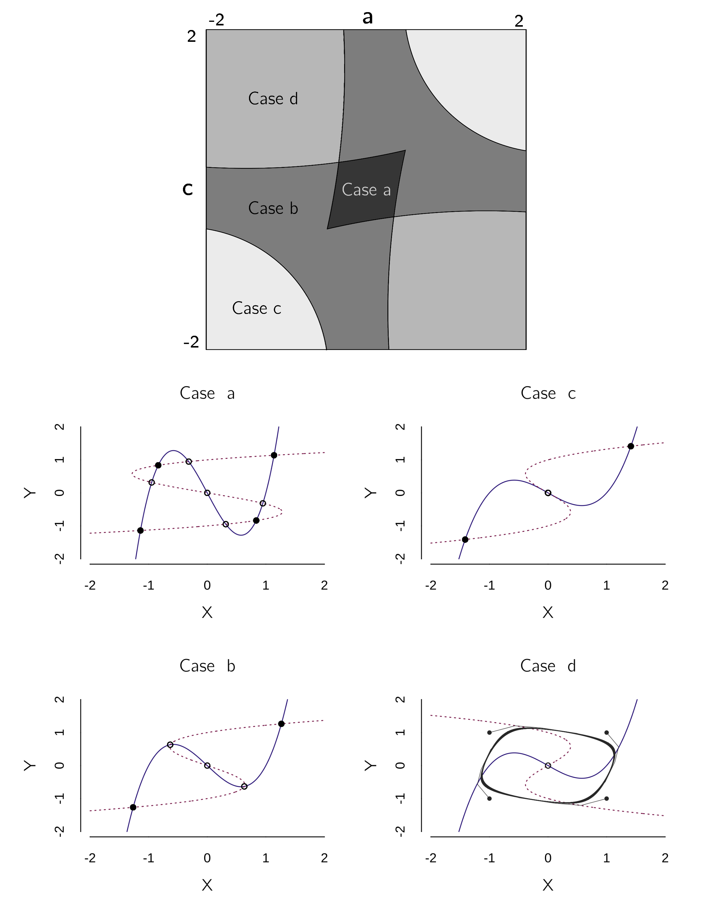
figure fig-ch4n-img16-old-64 の位相平面は次で作れる。
layout(matrix(1:4, 2, 2))
s <- c(X = 0, Y = 0)
for(i in c('a','b','c','d'))
{
if (i == 'a') p <- c(a = .3, b = 1, c = .3, d = 1)
if (i == 'b') p <- c(a = .6, b = 1, c = .6, d = 1)
if (i == 'c') p <- c(a = 1, b = 1, c = 1, d = 1)
if (i == 'd') p <- c(a = 1, b = 1, c = -1, d = 1)
plane(tstep = 0.5, portrait = (i == 'd'), xmin = -2, ymin = -2,
xmax = 2, ymax = 2, legend = FALSE, grid = 2,
main = paste("Case ", i)) # make a phase portrait (Fig 1c)
if (i != 'd') for(i in 1:200)
newton(c(X = runif(1, -2, 2),
Y = runif(1, -2, 2)), plot = TRUE)
else newton(c(X = 0, Y = 0), plot = TRUE)
}
s <- c(X = 0.1, Y = .1)
p <- c(a = 1, b = 1, c = -1, d = 1)
run(tmax = 20, tstep = 0.1, ymin = -2, ymax = 2) # Kadyrov oscillatorこのコードの最後の三行はカディロフ振動子を示す（figure fig-ch4n-img17-old-65）。
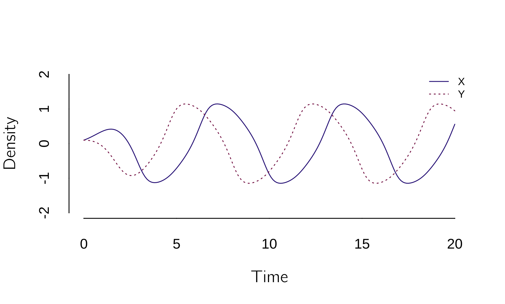
この分析を安定な固定点のみに少し単純化すると、三つのレジームが見られる。
場合 a（弱い相互作用）：各カスプは二つの安定状態をもつ。相互作用の強さ \(a\) と \(c\) が弱すぎるので、負の状態と正の状態の組み合わせが可能である。
場合 b と c（強い相互作用）：相互作用の強さ \(a\) と \(c\) が強すぎるので、負の状態と正の状態の組み合わせは今や不可能である。平衡状態 \(X\)* と \(Y\)* は、両方とも正か両方とも負である。
場合 d（反対の相互作用）：\(a\) と \(c\) が反対の符号をもち、振動をもたらす。
Abraham et al. (1991) はモデルを次のように一般化している。
\[ \begin{gathered} \frac{dX}{dt} = {a_{0} + a_{1}Y + (b_{0} + b_{1}Y)X - X}^{3}, \\ \frac{dY}{dt} = {c_{0} + c_{1}X + \left( d_{0} + d_{1}X \right)Y - Y}^{3}. \end{gathered} \tag{4.18}\]
これにより、今やカスプの分裂変数も正規変数も、他方のカスプの振る舞い状態の線形関数となる。これはさらに、\(N\) 個のカスプの系へと次のように一般化できる。
\[ \frac{dX_{i}}{dt} = a_{0i} + \sum_{j\neq i}^{}{a_{ij}X_{j}} + b_{0i}X_{i} + \sum_{j\neq i}^{}{b_{ij}X_{i}X_{j}} - {X_{i}}^{3}. \tag{4.19}\]
このモデルにおいて、\(a_{0i}\) は正規変数の切片であり、行列 \(a\) の非対角要素は他のカスプが正規変数に及ぼす効果の傾きである。\(a\) の対角要素は 0 に設定される。\(b_{0i}\) の値は分裂変数である。行列 \(b\)（対角 = 0）の \(b_{ij}\) の値は、他のカスプが \(X_{i}\) の分裂変数の値に及ぼす効果の傾きである。
カスケード転移モデルはさまざまな研究領域で独立に提案されてきた。ニューラルネットワークとしてのカスポイド網（\(N>3\)）の考えは Abraham (1991) で言及され、Hoffmann et al. (1986) と Izhikevich (1998) で分析されている。Castro and Timmis (2003) は、このモデルを適応免疫系の文脈で論じている。最も最近の応用は気候研究におけるものである (Dekker, von der Heydt, and Dijkstra 2018; von der Heydt, Dekker, and Dijkstra 2019; Klose et al. 2020)。 これらの応用は、一方のカスプが他方に影響するがその逆ではない場合のような、equation eq-ch4n-20-old-40 の特別な場合を含む。私の知る限り、\(b_{ij} \neq 0\) の場合は適用されていない。結合したファン・デル・ポル振動子を用いた最近の関連するアプローチが Monsivais-Velazquez et al. (2020) で記述されている。
気候における下位システムの崩壊のカスケードという考えは恐ろしいものである。
この多変量モデルの心理学的な例を、知覚に関して次節で挙げる。
4.3.8.2 知覚への応用
figure fig-ch4n-img18-old-66 を見てみよ。これは多安定知覚の特別な場合であり、私はこれを多図形多安定知覚と呼ぶ。
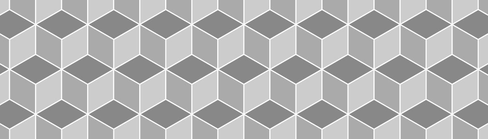
これらの知覚現象の力学系モデルを、カスケード転移モデルの設定を用いて構築できる。\(X\) を立方体の見えと定義する。\(X = 0\) は、立方体が知覚されず、線と色のついた平行四辺形だけが知覚されることを意味する。\(X > 0\) は前面の見えを、\(X < 0\) は背面の見えを表す（図 fig-ch3-img2-old-14 と比較）。一つの立方体についてのカスプモデルは \(\frac{dX}{dt} = {a + bX - X}^{3}\) であり、ここで \(a\) はバイアスパラメータ、\(b\) は注意パラメータである。\(a = 0\) かつ \(b > 1\)（バイアスがなく、図形へのある程度の注意がある）なら、双安定な見えと知覚の自発的な切り替えが得られる（いくらかのノイズを加えると仮定して。figure fig-ch4n-img2-old-50 を参照）。
さて、equation eq-ch4n-20-old-40 を適用する。\(N = 25\) である（数え方に少し依存する）。パラメータ \(a_{0i}\) の値はデータから推定すべきだが、今のところバイアスがないと仮定し、\(a_{0i} = 0\) とする。\(a_{ij} > 0\) と設定する。これは、カスプ間の正の結合を期待することを意味する。一つの立方体における三次元知覚が他の立方体における注意を増加させるという考えに基づき、\(b_{ij} > 0\) と設定する。\(b_{0}\) は注意ベクトルである。シミュレーションでは、まず注意が低い（\(b_{0i} = -0.3\)）と仮定する。初期の相の後、\(b_{01} = 1\) に設定する。すなわち、突然一つの立方体に注意を向ける。少し後、\(b_{01}\) を \(-0.3\) に戻す。
このモデルを機能させるには、一つの調整が必要である。\(\sum_{j \neq i}^{}{b_{ij}X_{i}X_{j}}\) を \(\sum_{j \neq i}^{}{b_{ij}X_{i}|X_{j}|}\) に置き換える。10 これは、隣接する立方体の三次元知覚による注意の増加が、前面と背面のどちらの見えを知覚するかに依存しないからである。したがって、多図形多安定知覚のモデルは次のとおりである。
\[ \frac{dX_{i}}{dt} = a_{0i} + \sum_{j \neq i}^{}{a_{ij}X_{j}} + b_{0i}X_{i} + \sum_{j \neq i}^{}{b_{ij}X_{i}\left| X_{j} \right|} - {X_{i}}^{3}. \tag{4.20}\]
このモデルをシミュレートするコードは次のとおりである。
set.seed(1)
model <- function(t, state, parms){
with(as.list(c(state, parms)),{
X <- state[1:N]
b0_i <- parms[1:N]
dX <- -X^3 + a0_i + a_ij %*% X + b0_i*X +
(X * b_ij %*% abs(X)) # note abs(X)
return(list(dX))
})
}
N <- 10 # 10 necker cubes
X <- runif(N, -0.1, 0.1) # initial state of X
a0_i <- rep(0, N) # no bias in percepts
a_ij <- matrix(.02, N, N) # small couplings (normal)
diag(a_ij) <- 0 # set diagonal of a to 0
b0_i <- rep(-.3, N) # attention initially low
b_ij <- matrix(.2, N, N) # some spread of attention (splitting)
diag(b_ij) <- 0 # set diagonal of b to 0
s <- X; p <- c(b0_i) # required for grind
run(after = "if(t == 33) parms <- c(1, rep(-.3, N-1));
if(t == 66) parms <- rep(-.3, N);
state <- state + rnorm(N, mean = 0, sd = 0.05)",
ymin = -1, ymax = 2.5, main = '', ylab = 'X', legend = FALSE)
b0_i <- rep(-.3, 100); b0_i[34:66] = 1 # for plotting attention
lines(b0_i, lwd = 2, lty = 3)
text(80, 1.4, 'Percepts')
text(80, -.5, 'Attention')これは figure fig-ch4n-img19-old-67 を与える。
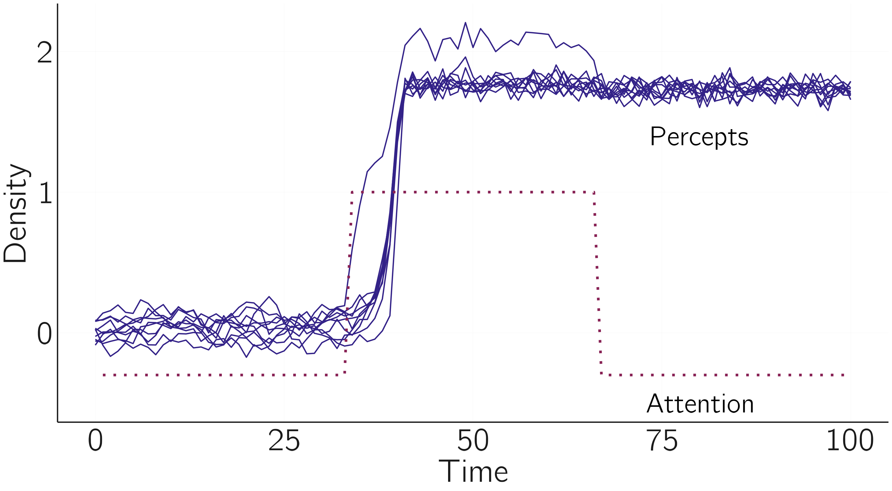
このモデルとその経験的な検証については、さらに多くのことが言える。一つの考えは、figure fig-ch4n-img20-old-68 のような異なる刺激を見ることである。
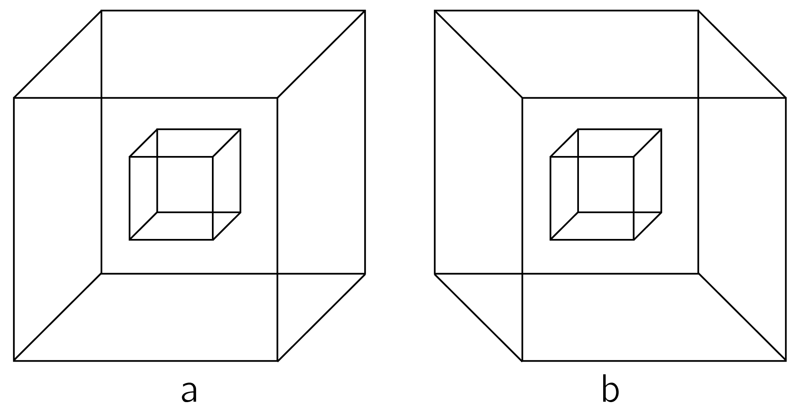
4.4 因果ループ図
私がまだ触れていない、力学系モデリングへの一つの人気のあるアプローチは、システムダイナミクスの分野で発展させられた因果ループ図の使用である (Forrester 1993; Meadows 2008)。 Crielaard et al. (2022) が論じているように、言語的理論から形式的モデルへの段階には、変数間の因果関係を指定する図を立てるという中間段階が必要かもしれない。因果ループ図に関連して、システムダイナミクス分析のためのいくつかの専用ソフトウェアパッケージがある。
因果ループ図は、システム思考とシステムダイナミクスで用いられる視覚的な道具であり、システム内のフィードバックループと因果関係を表す。
Insightmaker (Fortmann-Roe 2014) は、力学系モデリングとエージェントベースモデリングのためのグラフィカルなモデル構築インターフェースを提供する、単純で無料のオンラインツールである。そのため、本章と前章のモデルを実装するのに用いることができる。ロトカ–ヴォルテラの例は figure fig-ch4n-img21-old-69 に示されている。Insightmaker は使いやすい。「Explore Insights」で見つかるいくつかの例を研究すれば十分かもしれない。私は本章で論じたいくつかのモデルを、「vdmaas」というタグで Insightmaker に追加した。
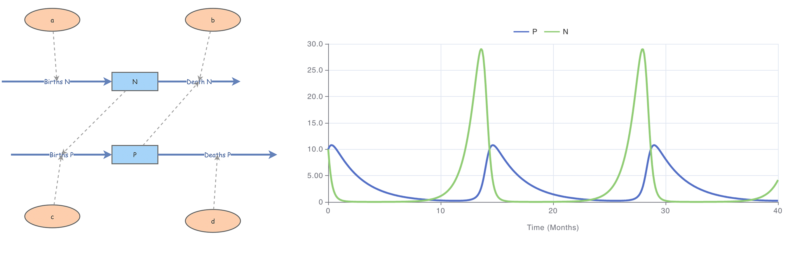
Insightmaker は多くの強力な組み込み関数をもち、感度検証やある種の最適化も可能にする。個人的に、私はいくつかの理由から、方程式を書いてそれを R に実装するアプローチを好む。一つは、これが論文でモデルを伝える仕方だからである。もう一つは、方程式が解析的な結果について考えるのを助けてくれるからである。解析的な結果は常にシミュレーションよりも望ましい。最後に、Grind や deBif を用いれば、単純なシミュレーションを超えて、平衡状態を分類し分岐解析を行える。しかし、直接実行することを目標とせずに理論化を具体化するために、より大きなモデルの因果ループ図を構築するには、Insightmaker は優れた道具である。
4.5 結びの言葉
本章では、力学系モデルの構築に焦点を当て、それらを数値的に研究するための R ツールを紹介した。この導入は必然的にいくぶん表面的なものであった。本章のはじめに、さらなる読書のために推薦するいくつかのテキストに言及した。あなたが今もっている知識は、異なる分野の既存のモデルを研究し、動的モデリングの専門家と協働することを可能にするだろう。あなたは今や、そのようなモデルについて伝え合うための基本的な言語をもっている。
しかし、動的モデリングの専門家と仕事をするときでさえ、有用なモデルを構築することは決して容易ではない。私は、少なくとも大まかには、私たちが理論構築方法論 (Borsboom et al. 2021) で提案した段階に従うことを勧める。 この方法論には、既存の言語的理論についての、そしてもし存在すれば代替的な形式的モデルについての、十分な知識が必要である。私は言語的理論やモデルを形式化する過程を魅力的だと思う。それは非常に混乱を招く傾向がある。突然、基本的な仮定が何なのか、ある心理学的理論で本当に提案されているメカニズムが何なのか、そして時間スケールが実際には何なのかが不明になる。
鍵は、説明を必要とする現象、すなわちデータに再現される反復するパターンを定式化することである。
一例として、Cattell (1987) のよく知られた投資理論を挙げる。キャッテルの投資理論は、新奇な問題を解く能力を表す流動性知能が、獲得された知識と技能から成る結晶性知能に「投資する」と措定する。私はこの理論を、それを力学方程式に翻訳しようとする前から長い間知っていた。しかしそれはそれほど容易ではなかった。私はそもそもなぜそれが投資理論と呼ばれるのかを疑問に思い始めた。何かに投資すると、それは初めは減るが将来はより多くなる。それが本当にキャッテルが意味したことなのか。現象、すなわちデータのパターンは、何か別のことを示唆している。というのも、流動性知能は急速に成長し、青年期以降ゆっくりと衰えるからである。結晶性知能はよりゆっくりと成長するが、決して本当には衰えない。投資の見返りがどこにあるのかが不明である。キャッテルの理論がナンセンスだと論じるつもりはなく、可能なモデルが第6章（sec-Abnormal-development）で提案されているが、これは形式化の過程がそれ自体、言語的理論の検証となることを例示している。
含めることができたはずの心理学的モデルがもういくつかある。たとえば、力学的場の理論の設定は Grind で再現するには少々複雑すぎるが、このモデルを研究することを勧める (Schöner and Spencer 2016)。第6章では、相利共生的な（正の）相互作用をもつ発達過程の力学モデルを提示し（sec-Mutualism-model）、sec-ch7 では社会的相互作用の力学系モデルを紹介する。心理学における力学系のモデリングについては、本書のエピローグでさらに論じる。
4.6 演習問題
ロジスティック方程式を Grind に入れ、平衡状態が何であるかを見出し、\(r\) のどの値についてこれらが安定または不安定な固定点であるかを判定せよ。(*)
これを解析的に確認せよ。二つの平衡状態 X* は何か。\(r\) のどの値についてこれらの固定点は安定か。あなたの結果は前の演習の結果と一致するか。(**)
Grind でロジスティック写像を作れ。\(r = 4\) について時系列をプロットせよ。(*)
figure fig-ch4n-img3-old-51 と同様に、熊手分岐のプロットを作れ。(*)
sec-Spruce-Budworm-outbreak-model のトウヒノシントメハマキモデルと deBif パッケージの
bifurcation()関数を用いて、figure fig-ch3-img16-old-28 に示された分岐図を再現せよ。何をしたかを記述し、得られた図を提示せよ。(**)Grind を用いて R で感染症の SIR モデルを実装せよ。ウィキペディアの「Compartmental Models in Epidemiology」のページにある、\(\beta = 0.4\) と \(\gamma = 0.04\) の SIR モデルの図を再現せよ。
figure fig-ch4n-img12-old-60 に示されたポリアの壺モデルのシミュレーションの時系列プロットを再現せよ。(**)
Grind でフィッツフュー–南雲モデルを実装し、figure fig-ch4n-img15-old-63 を再現せよ。厳密な再現は求められないが、位相図は似て見えるべきである。(**)
Insightmaker を用いてロミオとジュリエットのモデルの因果ループ図を作れ。二人が縮小していく憎しみと愛のサイクルに行き着く場合（減衰振動子、figure fig-ch4n-img9-old-57 の第二の場合）を再現せよ。シミュレーションのプロットを提出せよ。(**)
Abraham, Ralph. 1991. “Cuspoidal Nets.” In Business Cycles: Theories, Evidence and Analysis, edited by Niels Thygesen, Kumaraswamy Velupillai, and Stefano Zambelli, 56–63. International Economic Association. London: Palgrave Macmillan UK. https://doi.org/10.1007/978-1-349-11570-9_3.
Abraham, Ralph, Alexander Keith, Matthew Koebbe, and Gottfried Mayer-Kress. 1991. “Computational Unfolding of Double-Cusp Models of Opinion Formation.” International Journal of Bifurcation and Chaos 01 (02): 417–30. https://doi.org/10.1142/S0218127491000324.
Abrams, Peter A., Lev R. Ginzburg, Peter A. Abrams, Lev R. Ginzburg, Peter A. Abrams, and Lev R. Ginzburg. 2000. “The Nature of Predation: Prey Dependent, Ratio Dependent or Neither?” Trends in Ecology & Evolution 15 (8): 337–41. https://doi.org/10.1016/S0169-5347(00)01908-X.
Adams, Pauline, and Mason Haire. 1959. “The Effect of Orientation on the Reversal of One Cube Inscribed in Another.” The American Journal of Psychology 72: 296–99. https://doi.org/10.2307/1419384.
Ainsworth, Mary D. Salter, Mary C. Blehar, Everett Waters, and Sally N. Wall. 2015. Patterns of Attachment: A Psychological Study of the Strange Situation. New York: Psychology Press. https://doi.org/10.4324/9780203758045.
Bogacz, Rafal, Eric Brown, Jeff Moehlis, Philip Holmes, and Jonathan D. Cohen. 2006. “The Physics of Optimal Decision Making: A Formal Analysis of Models of Performance in Two-Alternative Forced-Choice Tasks.” Psychological Review 113: 700–765. https://doi.org/10.1037/0033-295X.113.4.700.
Boot, Jesse, Maarten van der Ende, Reinout W. Wiers, Mike Lees, and Han L. J. Van der Maas. submitted for publication. “Integrating Dual Process Decision-Making and Social Dynamics: A Formal Modeling Framework for Addiction,” submitted for publication.
Borsboom, Denny, Han L. J. van der Maas, Jonas Dalege, Rogier A Kievit, and Brian D Haig. 2021. “Theory Construction Methodology: A Practical Framework for Building Theories in Psychology.” Perspectives on Psychological Science 16 (4): 756–66. https://doi.org/10.1177/1745691620969647.
Castro, L. N. de, and J. I. Timmis. 2003. “Artificial Immune Systems as a Novel Soft Computing Paradigm.” Soft Computing 7 (8): 526–44. https://doi.org/10.1007/s00500-002-0237-z.
Cattell, R. B. 1987. Intelligence: Its Structure, Growth and Action. Elsevier.
Clark, David M. 1986. “A Cognitive Approach to Panic.” Behaviour Research and Therapy 24 (4): 461–70. https://doi.org/10.1016/0005-7967(86)90011-2.
Crielaard, Loes, Jeroen F Uleman, Bas D L Châtel, Sacha Epskamp, Peter M A Sloot, and Rick Quax. 2022. “Refining the Causal Loop Diagram: A Tutorial for Maximizing the Contribution of Domain Expertise in Computational System Dynamics Modeling.” Psychological Methods, May. https://doi.org/10.1037/met0000484.
Daugherty, Darryl, Tairi Roque-Urrea, John Urrea-Roque, Jessica Troyer, Stephen Wirkus, and Mason A. Porter. 2009. “Mathematical Models of Bipolar Disorder.” Communications in Nonlinear Science and Numerical Simulation 14 (7): 2897–2908. https://doi.org/10.1016/j.cnsns.2008.10.027.
de Boer, Rob J. 2018. “Simple Phase Plane Analysis and Parameter Estimation in R,” no. 20.
Dekker, Mark M., Anna S. von der Heydt, and Henk A. Dijkstra. 2018. “Cascading Transitions in the Climate System.” Earth System Dynamics 9 (4): 1243–60. https://doi.org/10.5194/esd-9-1243-2018.
Den Hartigh, Ruud J. R., Marijn W. G. Van Dijk, Henderien W. Steenbeek, and Paul L. C. Van Geert. 2016. “A Dynamic Network Model to Explain the Development of Excellent Human Performance.” Frontiers in Psychology 7. https://doi.org/10.3389/fpsyg.2016.00532.
Dongen, Noah N’Djaye Nikolai van, Riet van Bork, Adam Finnemann, Han L. J. van der Maas, Donald J. Robinaugh, Jonas Haslbeck, Jill de Ron, Jan Sprenger, and Denny Borsboom. 2024. “Productive Explanation: A Framework for Evaluating Explanations in Psychological Scienc.” Psychologial Review. https://doi.org/10.31234/osf.io/qd69g.
Duckworth, Angela, and James J. Gross. 2014. “Self-Control and Grit: Related but Separable Determinants of Success.” Current Directions in Psychological Science 23 (5): 319–25. https://doi.org/10.1177/0963721414541462.
Epskamp, Sacha, Han L. J. van der Maas, Roseann E. Peterson, Hanna M. van Loo, Steven H. Aggen, and Kenneth S. Kendler. 2022. “Intermediate Stable States in Substance Use.” Addictive Behaviors 129 (June): 107252. https://doi.org/10.1016/j.addbeh.2022.107252.
Forger, D B, M E Jewett, and R E Kronauer. 1999. “A Simpler Model of the Human Circadian Pacemaker.” Journal of Biological Rhythms 14 (6): 532–37. https://doi.org/10.1177/074873099129000867.
Forrester, Jay W. 1993. “System Dynamics and the Lessons of 35 Years.” In A Systems-Based Approach to Policymaking, edited by Kenyon B. De Greene, 199–240. Boston, MA: Springer US. https://doi.org/10.1007/978-1-4615-3226-2_7.
Fortmann-Roe, Scott. 2014. “Insight Maker: A General-Purpose Tool for Web-Based Modeling & Simulation.” Simulation Modelling Practice and Theory 47 (September): 28–45. https://doi.org/10.1016/j.simpat.2014.03.013.
Fürstenau, Norbert. 2014. “Simulating Bistable Perception with Interrupted Ambiguous Stimulus Using Self-Oscillator Dynamics with Percept Choice Bifurcation.” Cognitive Processing 15 (4): 467–90. https://doi.org/10.1007/s10339-014-0630-4.
Gale, D., and L. S. Shapley. 1962. “College Admissions and the Stability of Marriage.” The American Mathematical Monthly 69 (1): 9–15. https://doi.org/10.2307/2312726.
Gärtner, Klaus. 1990. “A Third Component Causing Random Variability Beside Environment and Genotype. A Reason for the Limited Success of a 30 Year Long Effort to Standardize Laboratory Animals?” Laboratory Animals 24 (1): 71–77. https://doi.org/10.1258/002367790780890347.
Gottman, John M., and Robert W. Levenson. 1992. “Marital Processes Predictive of Later Dissolution: Behavior, Physiology, and Health.” Journal of Personality and Social Psychology 63: 221–33. https://doi.org/10.1037/0022-3514.63.2.221.
Gottman, John M., James D. Murray, Catherine C. Swanson, Rebecca Tyson, and Kristin R. Swanson. 2002. The Mathematics of Marriage: Dynamic Nonlinear Models. The Mathematics of Marriage: Dynamic Nonlinear Models. Cambridge, MA, US: MIT Press.
Hamaker, Ellen L., Zhiyong Zhang, and Han L. J. van der Maas. 2009. “Using Threshold Autoregressive Models to Study Dyadic Interactions.” Psychometrika 74 (4): 727–45. https://doi.org/10.1007/s11336-009-9113-4.
Hoffmann, Geoffrey W, Maurice W Benson, Geoffrey M Bree, and Paul E Kinahan. 1986. “A Teachable Neural Network Based on an Unorthodox Neuron.” Physica D: Nonlinear Phenomena, Proceedings of the Fifth Annual International Conference, 22 (1): 233–46. https://doi.org/10.1016/0167-2789(86)90243-5.
Izhikevich, Eugene M. 1998. “Multiple Cusp bifurcations1This Paper Received the SIAM Award as the Best Student Paper in Applied Mathematics in 1995. It Was Written While the Author Was a Graduate Student at Department of Mathematics, Michigan State University, and Was Supported in Part by NSF Grant DMS 9206677.12This Work Could Not Be Accomplished Without Dr. Frank Hoppensteadt. I Am Very Grateful for All Kinds of Investments He Made in Me and My Research.23This Paper Is Dedicated to Frank C. Hoppensteadt on the Occasion of His 60th Birthday.3.” Neural Networks 11 (3): 495–508. https://doi.org/10.1016/S0893-6080(97)00117-2.
Izhikevich, Eugene M., and Richard FitzHugh. 2006. “FitzHugh-Nagumo Model.” Scholarpedia 1 (9): 1349. https://doi.org/10.4249/scholarpedia.1349.
Johnson, Chris J., Matthew A. Mumma, and Martin-Hugues St-Laurent. 2019. “Modeling Multispecies Predatorprey Dynamics: Predicting the Outcomes of Conservation Actions for Woodland Caribou.” Ecosphere 10 (3): e02622. https://doi.org/10.1002/ecs2.2622.
Jusup, Marko, Petter Holme, Kiyoshi Kanazawa, Misako Takayasu, Ivan Romić, Zhen Wang, Sunčana Geček, et al. 2022. “Social Physics.” Physics Reports, Social physics, 948 (February): 1–148. https://doi.org/10.1016/j.physrep.2021.10.005.
Klose, Ann Kristin, Volker Karle, Ricarda Winkelmann, and Jonathan F. Donges. 2020. “Emergence of Cascading Dynamics in Interacting Tipping Elements of Ecology and Climate.” Royal Society Open Science 7 (6): 200599. https://doi.org/10.1098/rsos.200599.
Ludwig, D., D. D. Jones, and C. S. Holling. 1978. “Qualitative Analysis of Insect Outbreak Systems: The Spruce Budworm and Forest.” Journal of Animal Ecology 47 (1): 315–32. https://doi.org/10.2307/3939.
Mahmoud, Hosam. 2008. Polya Urn Models. CRC Press.
Meadows, Donella H. 2008. Thinking in Systems: A Primer. Chelsea Green Publishing.
Molenaar, Peter C. M., Dorret I. Boomsma, and Conor V. Dolan. 1993. “A Third Source of Developmental Differences.” Behavior Genetics 23 (6): 519–24. https://doi.org/10.1007/BF01068142.
Molenaar, Peter C. M., and Louis Oppenheimer. 1985. “Dynamic Models of Development and the Mechanistic-Organismic Controversy.” New Ideas in Psychology 3 (3): 233–42. https://doi.org/10.1016/0732-118X(85)90017-0.
Monsivais-Velazquez, Daniel, Kunal Bhattacharya, Rafael A. Barrio, Philip K. Maini, and Kimmo K. Kaski. 2020. “Dynamics of Hierarchical Weighted Networks of van Der Pol Oscillators.” Chaos (Woodbury, N.Y.) 30 (12): 123146. https://doi.org/10.1063/5.0010638.
Murray, James D. 1989. Mathematical Biology. Berlin, Heidelberg: Springer. https://doi.org/10.1007/978-3-662-08539-4.
———. 2002. Mathematical Biology. 3rd ed. Interdisciplinary Applied Mathematics. New York: Springer.
Rapoport, Anatol. 1960. Fights, Games, and Debates. University of Michigan Press.
Ratcliff, Roger, Philip L. Smith, Scott D. Brown, and Gail McKoon. 2016. “Diffusion Decision Model: Current Issues and History.” Trends in Cognitive Sciences 20 (4): 260–81. https://doi.org/10.1016/j.tics.2016.01.007.
Remmerswaal, Danielle, Joran Jongerling, Pauline J. Jansen, Charly Eielts, and Ingmar H. A. Franken. 2019. “Impaired Subjective Self-Control in Alcohol Use: An Ecological Momentary Assessment Study.” Drug and Alcohol Dependence 204 (November): 107479. https://doi.org/10.1016/j.drugalcdep.2019.04.043.
Rinaldi, Sergio. 1998. “Love Dynamics: The Case of Linear Couples.” Applied Mathematics and Computation 95 (2): 181–92. https://doi.org/10.1016/S0096-3003(97)10081-9.
Robinaugh, Donald J., Jonas Haslbeck, Lourens J. Waldorp, Jolanda Kossakowski, Eiko I. Fried, Alex Millner, Richard J. McNally, et al. 2019. “Advancing the Network Theory of Mental Disorders: A Computational Model of Panic Disorder.” PsyArXiv. https://doi.org/10.31234/osf.io/km37w.
Roxin, Alex, and Anders Ledberg. 2008. “Neurobiological Models of Two-Choice Decision Making Can Be Reduced to a One-Dimensional Nonlinear Diffusion Equation.” PLOS Computational Biology 4 (3): e1000046. https://doi.org/10.1371/journal.pcbi.1000046.
Savi, Alexander O., Maarten Marsman, Han L. J. van der Maas, and Gunter K. J. Maris. 2019. “The Wiring of Intelligence.” Perspectives on Psychological Science 14 (6): 1034–61. https://doi.org/10.1177/1745691619866447.
Schöner, Gregor, and John P. Spencer. 2016. Dynamic Thinking: A Primer on Dynamic Field Theory. Oxford University Press.
Soetaert, Karline, Thomas Petzoldt, and R. Woodrow Setzer. 2010. “Solving Differential Equations in R : Package deSolve.” Journal of Statistical Software 33 (9). https://doi.org/10.18637/jss.v033.i09.
Sprott, J. C. 2004. “Dynamical Models of Love.” Nonlinear Dynamics, Psychology, and Life Sciences 8 (3): 303–14.
Strogatz, Steven H. 1988. “Love Affairs and Differential Equations.” Mathematics Magazine 61 (1): 35–35. https://doi.org/10.1080/0025570X.1988.11977342.
———. 2018. Nonlinear Dynamics and Chaos with Student Solutions Manual: With Applications to Physics, Biology, Chemistry, and Engineering, Second Edition. CRC Press.
Szostak, Natalia, Szymon Wasik, and Jacek Blazewicz. 2016. “Hypercycle.” Edited by Shoshana Wodak. PLOS Computational Biology 12 (4): e1004853. https://doi.org/10.1371/journal.pcbi.1004853.
Tschacher, Wolfgang, and Hermann Haken. 2019. The Process of Psychotherapy: Causation and Chance. Springer.
Tuerlinckx, Francis, Eric Maris, Roger Ratcliff, and Paul De Boeck. 2001. “A Comparison of Four Methods for Simulating the Diffusion Process.” Behavior Research Methods, Instruments, & Computers 33 (4): 443–56. https://doi.org/10.3758/BF03195402.
Tyutyunov, Yu. V., and L. I. Titova. 2020. “From LotkaVolterra to ArditiGinzburg: 90 Years of Evolving Trophic Functions.” Biology Bulletin Reviews 10 (3): 167–85. https://doi.org/10.1134/S207908642003007X.
van den Ende, Maarten W. J., Sacha Epskamp, Michael H. Lees, Han L. J. van der Maas, Reinout W. Wiers, and Peter M. A. Sloot. 2022. “A Review of Mathematical Modeling of Addiction Regarding Both (Neuro-) Psychological Processes and the Social Contagion Perspectives.” Addictive Behaviors 127 (April): 107201. https://doi.org/10.1016/j.addbeh.2021.107201.
van Geert, Paul. 1991. “A Dynamic Systems Model of Cognitive and Language Growth.” Psychological Review 98: 3–53. https://doi.org/10.1037/0033-295X.98.1.3.
———. 1998. “A Dynamic Systems Model of Basic Developmental Mechanisms: Piaget, Vygotsky, and Beyond.” Psychological Review 105: 634–77. https://doi.org/10.1037/0033-295X.105.4.634-677.
Verdonck, Stijn, and Francis Tuerlinckx. 2014. “The Ising Decision Maker: A Binary Stochastic Network for Choice Response Time.” Psychological Review 121: 422–62. https://doi.org/10.1037/a0037012.
von der Heydt, Anna, Mark Dekker, and Henk Dijkstra. 2019. “Cascading Transitions in the Climate System,” April, 10435.
マニュアルは https://github.com/hansschepers/grindr/blob/master/inst/documentation/GRIND%20tutorial.pdf. に見出される。↩︎
多くのテキストで \(\frac{dX}{dt}\) は \(\dot{X}\) と書かれる。↩︎
差分方程式は \(X_{t + 1} = f(X_{t})\) の形をもつので、変化 \(dX\) は \(f(X_{t})-X_{t}\) となる。そのため \(-X\) が加えられている。↩︎
このモデルを正しくシミュレートすることは、予想以上に難しい。方法の議論については Tuerlinckx et al. (2001) を参照されたい。↩︎
データが会話における発話交代から成るので、元のモデルでは差分方程式が用いられた。しかし、これは質的に異なる結果をもたらさない。
method='euler'と \(r_{w}\) と \(r_{h}\) の変更で差分モデルを構成できる。↩︎私は元の資料の定義と記法に従うが、このモデルが異性愛の関係に限られないことは明らかである。↩︎
この書き換えはリエナール変換に基づく。↩︎
フィッツフュー–南雲モデルは、それ自体が有名なホジキン–ハクスレーモデルの単純化された版である。ホジキン–ハクスレーモデルは四つの微分方程式から成り、スパイクするニューロンの活性化と不活性化のダイナミクスをより詳しくモデル化する。↩︎
\(X_j^2\) を用いることもできる。↩︎